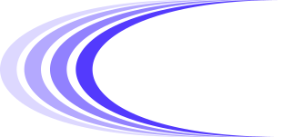

<!DOCTYPE html>
<html lang="en">
<head>
<meta charset="UTF-8">
<title>RegAnchor · AI Governance Dossier</title>
<link rel="preconnect" href="https://fonts.googleapis.com">
<link rel="preconnect" href="https://fonts.gstatic.com" crossorigin>
<link href="https://fonts.googleapis.com/css2?family=Inter:wght@400;500;600&display=swap" rel="stylesheet">
<style>
/* ============================================================
   AI Governance Dossier — premium board / procurement record
   Inter only. Sentence case. Status on the word. No Anchor Line.
   ============================================================ */

:root {
  --ink: #0A0E14;
  --text-2: #425466;
  --text-3: #697386;
  --line: #E6EBF1;
  --line-strong: #0A0E14;
  --wash: #F6F9FC;
  --accent: #533AFD;
  --ok: #0F766E;
  --ok-bg: #E6F5F3;
  --warn: #B45309;
  --warn-bg: #FFF4E0;
  --risk: #C8102E;
  --risk-bg: #FCE8EB;
  --font: 'Inter', -apple-system, BlinkMacSystemFont, 'Segoe UI', sans-serif;
  --t-hero: 26pt;
  --t-display: 15pt;
  --t-h1: 13pt;
  --t-body: 9.5pt;
  --t-small: 8.5pt;
  --t-micro: 8pt;
  --t-num: 22pt;
  --t-cover-title: 52pt;
  --radius: 4px;
  --page-margin: 20mm;
}

*, *::before, *::after { box-sizing: border-box; margin: 0; padding: 0; }

html {
  font-size: 10pt;
  -webkit-print-color-adjust: exact !important;
  print-color-adjust: exact !important;
}

/*
  Page size only — do not set @page margin here.
  Body PDFs reserve top/bottom bands via Puppeteer margin + header/footer.
  (@page { margin: 0 } makes Chromium ignore those bands and overlap chrome.)
*/
@page {
  size: A4;
}

body {
  font-family: var(--font);
  font-weight: 400;
  font-size: var(--t-body);
  color: var(--text-2);
  line-height: 1.5;
  background: #fff;
  text-transform: none;
  -webkit-font-smoothing: antialiased;
}

@media screen {
  /* Grey desk must span the full scroll area, not just the viewport width */
  html, body { background: #ECEFF3; }
  body { min-width: max-content; margin: 0; padding: 1px 16px; }
}

.section { page-break-before: always; }
.keep { page-break-inside: avoid; }

/* Inner page shell — cover has no chrome */
.section {
  position: relative;
  box-sizing: border-box;
  display: flex;
  flex-direction: column;
}
@media screen {
  .section {
    width: 210mm;
    min-height: 297mm;
    margin: 28px auto;
    padding: 18mm 24mm 16mm;
    background: #fff;
    box-shadow: 0 1px 3px rgba(10, 14, 20, 0.06), 0 12px 40px rgba(10, 14, 20, 0.08);
  }
}
@media print {
  /*
    Live PDF chrome (Confidential / Dossier ID / wordmark / page n) is painted by
    Puppeteer header/footer on every page. In-flow .page-hdr / .page-ftr are for
    screen preview cards only — they cannot repeat when a section spans pages.
  */
  .page-hdr,
  .page-ftr {
    display: none !important;
  }
  .section {
    width: auto;
    min-height: 0;
    padding: 0;
    box-sizing: border-box;
  }
  .section-body {
    flex: none;
  }
}
.section-body { flex: 1 1 auto; }

.page-hdr {
  display: flex;
  align-items: center;
  justify-content: space-between;
  gap: 16px;
  margin: 0 0 22px;
  padding: 0 0 12px;
  border-bottom: 1px solid var(--line);
}
.page-hdr-left {
  font-size: var(--t-micro);
  font-weight: 500;
  color: var(--text-3);
  letter-spacing: 0.02em;
}
.page-hdr-id {
  font-size: var(--t-micro);
  font-weight: 500;
  color: var(--text-3);
  font-variant-numeric: tabular-nums;
  line-height: 1.3;
  text-align: right;
}

.page-ftr {
  display: flex;
  align-items: center;
  justify-content: space-between;
  gap: 16px;
  margin: auto 0 0;
  padding: 12px 0 0;
  border-top: 1px solid var(--line);
  flex-shrink: 0;
}
.page-ftr .brand-wordmark {
  width: 88px;
  margin: 0;
  padding: 0;
}
.page-ftr-num {
  font-size: var(--t-micro);
  font-weight: 500;
  color: var(--text-3);
  font-variant-numeric: tabular-nums;
}

.page-title {
  font-size: 18pt;
  font-weight: 500;
  color: var(--ink);
  line-height: 1.25;
  letter-spacing: -0.02em;
  margin: 0 0 28px;
}

.exec-lede {
  margin: 0 0 12px;
  font-size: var(--t-body);
  color: var(--ink);
  line-height: 1.55;
}
.exec-lede:last-of-type { margin-bottom: 28px; }

/* Posture panel — score + band list (left-embedded) */
.posture-panel {
  display: grid;
  grid-template-columns: 1fr 1fr;
  gap: 28px 36px;
  align-items: center;
  margin: 0 0 28px;
  padding: 0;
}
.posture-score {
  display: flex;
  align-items: center;
  gap: 20px;
}
.posture-score-copy .score-posture {
  margin-bottom: 4px;
}
.posture-bands {
  list-style: none;
  margin: 0;
  padding: 0;
  display: flex;
  flex-direction: column;
  gap: 8px;
}
.posture-band {
  display: flex;
  align-items: center;
  gap: 10px;
  font-size: var(--t-small);
  font-weight: 500;
  color: var(--ink);
  line-height: 1.3;
}
.posture-band-dot {
  width: 7px;
  height: 7px;
  border-radius: 50%;
  background: var(--line-strong);
  opacity: 0.22;
  flex-shrink: 0;
}
.posture-band.is-active {
  color: var(--accent);
}
.posture-band.is-active .posture-band-dot {
  background: var(--accent);
  opacity: 1;
  box-shadow: 0 0 0 3px rgba(83, 58, 253, 0.18);
}
.highlights {
  margin: 0 0 32px;
}
.highlights-label {
  display: block;
  font-size: 10pt;
  font-weight: 500;
  color: var(--ink);
  line-height: 1.3;
  margin: 0 0 12px;
}
.highlights > .highlights-label {
  margin-bottom: 20px;
}
.highlights-grid {
  display: grid;
  grid-template-columns: repeat(4, 1fr);
  gap: 14px;
}
.highlight {
  display: flex;
  flex-direction: column;
  align-items: center;
  text-align: center;
  padding: 18px 12px 16px;
  border: none;
  border-radius: var(--radius);
  background: #F3F1FF;
  min-height: 92px;
  box-sizing: border-box;
}
.highlight-val {
  font-size: 18pt;
  font-weight: 500;
  color: var(--ink);
  font-variant-numeric: tabular-nums;
  line-height: 1.1;
  letter-spacing: -0.02em;
  flex-shrink: 0;
}
.highlight-lbl {
  margin-top: 8px;
  font-size: var(--t-small);
  font-weight: 500;
  color: var(--ink);
  line-height: 1.3;
  min-height: 2.6em;
  max-width: 12ch;
}

.observations {
  margin: 0;
}
.obs-list {
  list-style: none;
  margin: 0;
  padding: 0;
}
.obs-list li {
  padding: 6px 0 6px 16px;
  font-size: var(--t-body);
  color: var(--ink);
  line-height: 1.5;
  position: relative;
}
.obs-list li::before {
  content: '';
  position: absolute;
  left: 2px;
  top: 13px;
  width: 4px;
  height: 4px;
  border-radius: 50%;
  background: var(--accent);
}

/* Legacy section chrome — kept for non-exec pages until fully migrated */
.sec-bar {
  display: flex;
  align-items: baseline;
  gap: 10px;
  padding: 0 0 10px;
  margin: 0 0 18px;
  border-bottom: 1px solid var(--line);
}
.sec-bar-num {
  font-size: var(--t-micro);
  font-weight: 500;
  color: var(--text-3);
  font-variant-numeric: tabular-nums;
  min-width: 1.6em;
}
.sec-bar-title {
  font-size: var(--t-micro);
  font-weight: 500;
  color: var(--ink);
  flex: 1;
}

.sec-title {
  font-size: var(--t-h1);
  font-weight: 500;
  color: var(--ink);
  line-height: 1.3;
  letter-spacing: -0.01em;
  margin: 0 0 8px;
}
.sec-intro {
  font-size: var(--t-body);
  color: var(--text-2);
  line-height: 1.55;
  max-width: 62ch;
  margin: 0 0 20px;
}

.sub-label {
  display: block;
  font-size: var(--t-micro);
  font-weight: 500;
  color: var(--text-3);
  margin: 22px 0 10px;
}

/* Cover — match preview.webp top-left: whitespace majority, half-swoosh */
.cover {
  position: relative;
  page-break-after: always;
  overflow: hidden;
  display: flex;
  flex-direction: column;
  background: #fff;
  /* Top cushion — title sits further down like the mockup */
  padding: 30mm 24mm 0;
  min-height: 252mm;
  box-sizing: border-box;
}

@media screen {
  .cover {
    width: 210mm;
    min-height: 297mm;
    margin: 28px auto;
    box-shadow: 0 1px 3px rgba(10, 14, 20, 0.06), 0 12px 40px rgba(10, 14, 20, 0.08);
  }
}

@media print {
  /*
    Cover is rendered in a separate full-bleed PDF pass (no Puppeteer chrome),
    then merged ahead of the body pages that carry locked header/footer.
  */
  .cover {
    margin: 0;
    width: 210mm;
    height: 297mm;
    min-height: 297mm;
    max-height: 297mm;
    padding: 28mm 24mm 0;
    overflow: hidden;
  }
  body.dossier-body-only .cover {
    display: none !important;
  }
  body.dossier-cover-only .section {
    display: none !important;
  }
  body.dossier-body-only .section:first-of-type {
    page-break-before: auto;
  }
}

.cover-swoosh-wrap {
  position: absolute;
  /*
    preview.webp: page bottom clips through the art a little above centre.
    Full wrap (no short clip box) so band tips are not flat-cut.
    Four bands rise complete; right tip thins off-page.
  */
  inset: 0;
  overflow: hidden;
  pointer-events: none;
  z-index: 0;
}

.cover-swoosh {
  position: absolute;
  /* Nudge right — leftmost band flush to the left page edge */
  left: -8%;
  bottom: 0;
  width: 124%;
  max-width: none;
  height: auto;
  display: block;
  /*
    Drop the art so the page edge meets the clean up-and-right arc
    (not the S-hook near the geometric centre). Tip thins off the right.
  */
  transform: translateY(56%);
  user-select: none;
}

.cover-content {
  position: relative;
  z-index: 1;
  flex: 1;
  display: flex;
  flex-direction: column;
  max-width: 78%;
  /* Room for the crest under Prepared by */
  padding-bottom: 24%;
  --cover-stack-gap: 28mm;
}

.brand-wordmark {
  display: block;
  width: 118px;
  height: auto;
  overflow: visible;
  margin: 0;
  padding-bottom: 4px;
  flex-shrink: 0;
}

.cover .brand-wordmark {
  width: 132px;
  /* Drop the mark so wordmark→title matches tagline→Organisation */
  margin-top: 10mm;
}

/* Title + tagline; gap above matches gap into meta */
.cover-intro {
  margin-top: var(--cover-stack-gap);
  display: flex;
  flex-direction: column;
}

.cov-title {
  font-size: var(--t-cover-title);
  font-weight: 500;
  color: var(--ink);
  line-height: 1.02;
  letter-spacing: -0.045em;
  /* Mockup: clear air between “Dossier” and the Evidence tagline */
  margin: 0 0 18pt;
  max-width: none;
}

.cov-tagline {
  margin: 0;
  font-size: 11.5pt;
  font-weight: 500;
  color: #533AFD;
  line-height: 1.3;
  letter-spacing: -0.01em;
  white-space: nowrap;
  max-width: none;
}

/* Stacked label-over-value — same vertical gap as wordmark→title */
.cov-meta {
  display: flex;
  flex-direction: column;
  gap: 24px;
  margin: var(--cover-stack-gap) 0 0;
  max-width: 28em;
}
.cov-meta-item {
  display: flex;
  flex-direction: column;
  gap: 4px;
}
.cov-meta dt {
  margin: 0;
  font-size: 8pt;
  font-weight: 500;
  color: var(--text-3);
  line-height: 1.2;
}
.cov-meta dd {
  margin: 0;
  font-size: 10.5pt;
  font-weight: 500;
  color: var(--ink);
  line-height: 1.35;
  font-variant-numeric: tabular-nums;
}

/* Score / layers */
.score-row {
  display: grid;
  grid-template-columns: 120px 1fr;
  gap: 24px;
  align-items: center;
  margin: 4px 0 22px;
}
.score-ring {
  position: relative;
  width: 108px;
  height: 108px;
}
.score-ring svg { display: block; width: 108px; height: 108px; }
.score-ring-inner {
  position: absolute;
  inset: 0;
  display: flex;
  flex-direction: column;
  align-items: center;
  justify-content: center;
}
.score-num {
  font-size: var(--t-num);
  font-weight: 500;
  color: var(--ink);
  font-variant-numeric: tabular-nums;
  line-height: 1;
}
.score-of { font-size: var(--t-micro); color: var(--text-3); margin-top: 3px; }
.score-posture {
  font-size: 12pt;
  font-weight: 500;
  color: var(--ink);
  margin-bottom: 6px;
}
.score-note {
  font-size: var(--t-small);
  color: var(--text-2);
  line-height: 1.5;
}

.layer-grid {
  display: grid;
  grid-template-columns: repeat(3, 1fr);
  gap: 12px;
  margin: 0 0 22px;
}
.layer {
  padding: 12px 0;
  border-top: 1px solid var(--line);
}
.layer-lbl {
  font-size: var(--t-micro);
  font-weight: 500;
  color: var(--text-3);
}
.layer-val {
  font-size: 16pt;
  font-weight: 500;
  color: var(--ink);
  font-variant-numeric: tabular-nums;
  margin-top: 4px;
}

.risk-strip {
  display: flex;
  flex-wrap: wrap;
  gap: 8px 20px;
  margin: 0 0 22px;
  padding: 12px 0;
  border-top: 1px solid var(--line);
  border-bottom: 1px solid var(--line);
}
.risk-chip {
  font-size: var(--t-small);
  color: var(--text-2);
}
.risk-chip strong {
  font-weight: 500;
  color: var(--ink);
  font-variant-numeric: tabular-nums;
  margin-right: 6px;
}

.stat-grid {
  display: grid;
  grid-template-columns: repeat(3, 1fr);
  gap: 0;
  margin: 0 0 22px;
  border-top: 1px solid var(--line);
}
.stat {
  padding: 14px 14px 14px 0;
  border-bottom: 1px solid var(--line);
  border-right: 1px solid var(--line);
}
.stat:nth-child(3n) { border-right: none; padding-right: 0; }
.stat-lbl {
  display: block;
  font-size: var(--t-micro);
  font-weight: 500;
  color: var(--text-3);
  margin-bottom: 4px;
}
.stat-val {
  font-size: 14pt;
  font-weight: 500;
  color: var(--ink);
  font-variant-numeric: tabular-nums;
}
.stat-sub {
  font-size: var(--t-micro);
  color: var(--text-3);
  margin-top: 3px;
  line-height: 1.4;
}

/* TOC */
.toc { list-style: none; margin: 0; padding: 0; }
.toc li {
  display: flex;
  align-items: baseline;
  gap: 0;
  padding: 10px 0;
  border: none;
  font-size: var(--t-body);
  color: var(--ink);
  font-weight: 500;
}
.toc-label {
  display: flex;
  align-items: baseline;
  gap: 0.55em;
  flex: 0 1 auto;
  min-width: 0;
  color: var(--ink);
  font-weight: 500;
}
.toc-num {
  box-sizing: content-box;
  flex: 0 0 3ch;
  width: 3ch;
  font-weight: 500;
  color: var(--ink);
  font-variant-numeric: tabular-nums;
  text-align: right;
}
.toc-title {
  flex: 0 1 auto;
  font-weight: 500;
  color: var(--ink);
}
.toc-lead {
  flex: 1 1 auto;
  border-bottom: 1px dotted var(--text-3);
  margin: 0 10px 0.3em;
  min-width: 1.5em;
  height: 0;
  opacity: 0.55;
}
.toc-page {
  flex: 0 0 2ch;
  width: 2ch;
  font-weight: 500;
  color: var(--ink);
  font-variant-numeric: tabular-nums;
  text-align: right;
}

/* Tables */
table.data {
  width: 100%;
  border-collapse: separate;
  border-spacing: 0;
  margin: 0 0 16px;
  font-size: var(--t-small);
}
table.data th {
  text-align: left;
  font-weight: 500;
  color: var(--ink);
  font-size: var(--t-micro);
  text-transform: none;
  letter-spacing: -0.01em;
  padding: 10px 12px;
  background: #F3F1FF;
  border-bottom: none;
  vertical-align: middle;
}
table.data th:first-child {
  border-radius: var(--radius) 0 0 var(--radius);
  padding-left: 12px;
}
table.data th:last-child {
  border-radius: 0 var(--radius) var(--radius) 0;
  padding-right: 12px;
}
table.data td {
  padding: 9px 12px;
  border-bottom: 1px solid var(--line);
  color: var(--ink);
  vertical-align: top;
  line-height: 1.4;
  font-weight: 500;
}
table.data td:first-child { padding-left: 12px; }
table.data td:last-child { padding-right: 12px; }
table.data td.muted,
table.data .muted {
  color: var(--ink);
  font-weight: 500;
}
table.data .num { font-variant-numeric: tabular-nums; }
table.data .asset-name { font-weight: 500; color: var(--ink); }
table.data .asset-sub {
  display: block;
  font-size: var(--t-micro);
  font-weight: 400;
  color: var(--text-3);
  margin-top: 2px;
}
table.data .ev-summary.quiet {
  color: var(--ink);
}

.provider-cell {
  display: inline-flex;
  align-items: center;
  gap: 6px;
  white-space: nowrap;
}
.provider-ico {
  flex: none;
  display: block;
  width: 14px;
  height: 14px;
}
.status {
  font-weight: 500;
  font-size: var(--t-small);
}
.status.s-ok { color: var(--ok); }
.status.s-risk { color: var(--risk); }
.status.s-muted, .status.s-info, .status.s-neutral { color: var(--text-3); }
.status.s-ink { color: var(--ink); }

/* Risk tags — match app StatusLabel badge tones */
.risk-badge {
  display: inline-flex;
  align-items: center;
  justify-content: center;
  padding: 2px 7px;
  border-radius: var(--radius);
  font-size: var(--t-micro);
  font-weight: 600;
  letter-spacing: -0.01em;
  line-height: 1.25;
  white-space: nowrap;
  border: 1px solid transparent;
}
.risk-badge.tier-high {
  background: var(--risk-bg);
  color: var(--risk);
}
.risk-badge.tier-limited {
  background: var(--warn-bg);
  color: var(--warn);
}
.risk-badge.tier-minimal {
  background: var(--ok-bg);
  color: var(--ok);
}
.risk-badge.tier-none {
  background: var(--wash);
  color: var(--text-2);
  border-color: var(--line);
}

.ev-summary { font-size: var(--t-small); color: var(--ink); }
.ev-summary.quiet { color: var(--ink); }

.mix-stack {
  display: flex;
  flex-direction: column;
  gap: 2px;
  font-size: inherit;
  font-weight: 500;
  color: var(--ink);
  line-height: 1.4;
}

/* Control detail */
.ctrl-block {
  padding: 16px 0;
  border-bottom: 1px solid var(--line);
  page-break-inside: avoid;
}
.ctrl-block:first-of-type { padding-top: 0; }
.ctrl-head {
  display: flex;
  align-items: baseline;
  gap: 12px;
  margin-bottom: 8px;
}
.ctrl-code {
  font-weight: 500;
  color: var(--text-3);
  font-variant-numeric: tabular-nums;
  font-size: var(--t-small);
}
.ctrl-name {
  font-weight: 500;
  color: var(--ink);
  font-size: var(--t-body);
  flex: 1;
}
.ctrl-meta {
  display: grid;
  grid-template-columns: 1fr 1fr 1fr;
  gap: 10px 16px;
  margin: 12px 0;
  font-size: var(--t-small);
}
.ctrl-meta dt {
  font-size: var(--t-micro);
  font-weight: 500;
  color: var(--text-3);
  margin-bottom: 2px;
}
.ctrl-meta dd { color: var(--ink); font-weight: 400; }
.ctrl-body {
  font-size: var(--t-small);
  color: var(--text-2);
  line-height: 1.5;
  margin: 4px 0 8px;
  max-width: 72ch;
}
.ctrl-ev {
  display: grid;
  grid-template-columns: 1fr 1fr;
  gap: 12px;
  margin-top: 8px;
}
.ctrl-ev-box {
  background: var(--wash);
  border-radius: var(--radius);
  padding: 10px 12px;
}
.ctrl-ev-box .ev-label {
  display: block;
  font-size: var(--t-micro);
  font-weight: 500;
  color: var(--text-3);
  margin-bottom: 4px;
}
.ctrl-ev-box ul {
  margin: 0;
  padding-left: 14px;
  color: var(--ink);
  font-size: var(--t-small);
}
.ctrl-ev-box li { margin-bottom: 3px; }

.kv {
  display: grid;
  grid-template-columns: 168px 1fr;
  column-gap: 16px;
  row-gap: 0;
  margin: 0;
  font-size: var(--t-body);
  position: relative;
  align-items: stretch;
}
.kv::before {
  content: '';
  position: absolute;
  left: 0;
  top: 0;
  bottom: 0;
  width: 168px;
  background: #F3F1FF;
  border-radius: var(--radius);
  z-index: 0;
  pointer-events: none;
}
.kv dt,
.kv dd {
  position: relative;
  z-index: 1;
  margin: 0;
  padding: 11px 14px;
  display: flex;
  align-items: center;
  min-height: 1.4em;
  box-sizing: border-box;
  color: var(--ink);
  font-weight: 500;
}
.kv dd {
  padding-left: 4px;
}

/* Asset profiles — symmetrical two-column cards */
.asset-grid {
  display: grid;
  grid-template-columns: 1fr 1fr;
  gap: 14px 16px;
  margin: 4px 0 0;
  align-items: stretch;
}
.asset-card {
  display: grid;
  grid-template-rows: 22px 4.35em auto;
  row-gap: 10px;
  min-height: 0;
  padding: 16px 16px 14px;
  border: 1px solid var(--line);
  border-radius: var(--radius);
  background: #fff;
  page-break-inside: avoid;
  box-sizing: border-box;
  align-content: start;
}
.asset-card-head {
  display: flex;
  align-items: center;
  justify-content: space-between;
  gap: 10px;
  min-width: 0;
  height: 22px;
  overflow: hidden;
}
.asset-card-title {
  font-size: 10pt;
  font-weight: 500;
  letter-spacing: -0.01em;
  line-height: 1.3;
  color: var(--ink);
  min-width: 0;
  white-space: nowrap;
  overflow: hidden;
  text-overflow: ellipsis;
}
.conn-badge {
  flex: none;
  display: inline-flex;
  align-items: center;
  justify-content: center;
  padding: 2px 7px;
  border-radius: var(--radius);
  font-size: var(--t-micro);
  font-weight: 600;
  letter-spacing: -0.01em;
  line-height: 1.25;
  white-space: nowrap;
  border: 1px solid transparent;
}
.conn-badge.conn-ok {
  background: var(--ok-bg);
  color: var(--ok);
}
.conn-badge.conn-warn {
  background: var(--warn-bg);
  color: var(--warn);
}
.asset-card-desc {
  margin: 0;
  height: 4.35em;
  min-height: 4.35em;
  max-height: 4.35em;
  font-size: var(--t-body);
  font-weight: 500;
  letter-spacing: -0.01em;
  line-height: 1.45;
  color: var(--ink);
  overflow: hidden;
}
.asset-card-meta {
  display: grid;
  grid-template-columns: 1fr 1fr;
  gap: 10px 16px;
  margin: 4px 0 0;
  padding-top: 12px;
  border-top: 1px solid var(--line);
  align-items: start;
}
.asset-meta-col {
  display: flex;
  flex-direction: column;
  gap: 10px;
  min-width: 0;
}
.asset-meta {
  min-width: 0;
}
.asset-meta-lbl {
  display: block;
  margin-bottom: 2px;
  font-size: var(--t-micro);
  font-weight: 500;
  letter-spacing: -0.01em;
  color: var(--text-2);
}
.asset-meta-val {
  font-size: var(--t-small);
  font-weight: 500;
  letter-spacing: -0.01em;
  line-height: 1.35;
  color: var(--ink);
  word-break: break-word;
}

.note-line {
  font-size: var(--t-small);
  color: var(--text-3);
  margin: 12px 0 0;
  line-height: 1.45;
}

.empty {
  padding: 16px 0;
  color: var(--text-3);
  font-size: var(--t-body);
  border-top: 1px solid var(--line);
}

.approve-lede {
  font-size: var(--t-body);
  color: var(--text-2);
  line-height: 1.55;
  margin: 0 0 28px;
  max-width: 68ch;
}
.approve-lede strong {
  color: var(--ink);
  font-weight: 500;
}

.signoff-block {
  margin: 0 0 28px;
}
.signoff-row {
  display: grid;
  grid-template-columns: 1.35fr 1.15fr 0.85fr;
  gap: 20px 28px;
  padding: 20px 0;
  border-top: 1px solid var(--line);
  page-break-inside: avoid;
}
.signoff-row:last-child {
  border-bottom: 1px solid var(--line);
}
.signoff-lbl {
  display: block;
  font-size: var(--t-micro);
  font-weight: 500;
  letter-spacing: -0.01em;
  color: var(--text-3);
  margin-bottom: 12px;
}
.signoff-name {
  font-size: var(--t-body);
  font-weight: 500;
  letter-spacing: -0.01em;
  color: var(--ink);
  line-height: 1.35;
  min-height: 1.35em;
}
.signoff-job {
  margin-top: 4px;
  font-size: var(--t-small);
  font-weight: 500;
  letter-spacing: -0.01em;
  color: var(--ink);
  line-height: 1.35;
  min-height: 1.35em;
}
.signoff-rule {
  margin-top: 28px;
  border-bottom: 1px solid var(--ink);
  min-height: 28px;
}
.signoff-sig {
  margin-top: 8px;
  min-height: 48px;
  max-width: 220px;
}
.signoff-sig svg {
  display: block;
  width: 100%;
  height: 48px;
}
.signoff-date-val {
  margin-top: 28px;
  font-size: var(--t-body);
  font-weight: 500;
  letter-spacing: -0.01em;
  color: var(--ink);
  line-height: 1.35;
  min-height: 28px;
}

.signoff-time {
  margin-top: 2px;
  font-size: var(--t-micro);
  font-weight: 500;
  color: var(--text-3);
  font-variant-numeric: tabular-nums;
}

.audit-sign {
  display: grid;
  grid-template-columns: 1fr 1.2fr;
  gap: 28px;
  padding: 20px 0;
  border-top: 1px solid var(--line);
  page-break-inside: avoid;
}
.audit-sig {
  max-width: 240px;
  min-height: 56px;
  margin-bottom: 10px;
  border-bottom: 1px solid var(--line);
}
.audit-sig svg {
  display: block;
  width: 100%;
  height: 56px;
}
.audit-decl {
  margin: 0;
  font-size: var(--t-small);
  font-weight: 500;
  color: var(--ink);
  line-height: 1.5;
}
.audit-facts {
  display: grid;
  grid-template-columns: 1fr 1fr;
  gap: 0 28px;
  margin: 0 0 24px;
  border-top: 1px solid var(--line);
  page-break-inside: avoid;
}
.audit-fact {
  display: grid;
  grid-template-columns: 150px 1fr;
  gap: 12px;
  padding: 8px 0;
  border-bottom: 1px solid var(--line);
  font-size: var(--t-micro);
  font-weight: 500;
  line-height: 1.45;
}
.audit-k { color: var(--text-2); }
.audit-v { color: var(--ink); word-break: break-word; }
.audit-mono { font-variant-numeric: tabular-nums; word-break: break-all; }

.export-ref {
  margin: 4px 0 0;
  font-size: var(--t-micro);
  font-weight: 500;
  letter-spacing: -0.01em;
  color: var(--text-3);
  line-height: 1.45;
}

.disclaimer-slot {
  margin-top: 36px;
  min-height: 48px;
}

@media print {
  .section { page-break-before: always; }
  .cover { page-break-after: always; }
  thead { display: table-header-group; }
  tr, .ctrl-block, .layer, .stat, .obs-list li, .signoff-row {
    page-break-inside: avoid;
    break-inside: avoid;
  }
  table.data { page-break-inside: auto; }
  h2, .sec-bar, .sub-label {
    page-break-after: avoid;
    break-after: avoid;
  }
  p, li { orphans: 3; widows: 3; }
}
</style>
</head>
<body>
<div id="dossier"></div>
<script>
/*__DOSSIER_DATA__*/

const PROVIDER_LABELS = {
  anthropic: 'Anthropic',
  openai: 'OpenAI',
  bedrock: 'AWS Bedrock',
  aws: 'AWS',
  google: 'Google',
  googlecloud: 'Google Cloud',
  gemini: 'Gemini',
  azure: 'Microsoft Foundry',
  azureai: 'Microsoft Foundry',
  microsoft: 'Microsoft',
  meta: 'Meta',
  huggingface: 'Hugging Face',
  groq: 'Groq',
  cohere: 'Cohere',
  cursor: 'Cursor',
  in_house: 'In-house',
  other: 'Other',
};

const PROVIDER_ICONS = {
  anthropic: `<path fill="#141413" fill-rule="evenodd" d="M13.827 3.52h3.603L24 20h-3.603l-6.57-16.48zm-7.258 0h3.767L16.906 20h-3.674l-1.343-3.461H5.017l-1.344 3.46H0L6.57 3.522zm4.132 9.959L8.453 7.687 6.205 13.48H10.7z"/>`,
  openai: `<path fill="#000000" fill-rule="evenodd" d="M9.205 8.658v-2.26c0-.19.072-.333.238-.428l4.543-2.616c.619-.357 1.356-.523 2.117-.523 2.854 0 4.662 2.212 4.662 4.566 0 .167 0 .357-.024.547l-4.71-2.759a.797.797 0 00-.856 0l-5.97 3.473zm10.609 8.8V12.06c0-.333-.143-.57-.429-.737l-5.97-3.473 1.95-1.118a.433.433 0 01.476 0l4.543 2.617c1.309.76 2.189 2.378 2.189 3.948 0 1.808-1.07 3.473-2.76 4.163zM7.802 12.703l-1.95-1.142c-.167-.095-.239-.238-.239-.428V5.899c0-2.545 1.95-4.472 4.591-4.472 1 0 1.927.333 2.712.928L8.23 5.067c-.285.166-.428.404-.428.737v6.898zM12 15.128l-2.795-1.57v-3.33L12 8.658l2.795 1.57v3.33L12 15.128zm1.796 7.23c-1 0-1.927-.332-2.712-.927l4.686-2.712c.285-.166.428-.404.428-.737v-6.898l1.974 1.142c.167.095.238.238.238.428v5.233c0 2.545-1.974 4.472-4.614 4.472zm-5.637-5.303l-4.544-2.617c-1.308-.761-2.188-2.378-2.188-3.948A4.482 4.482 0 014.21 6.327v5.423c0 .333.143.571.428.738l5.947 3.449-1.95 1.118a.432.432 0 01-.476 0zm-.262 3.9c-2.688 0-4.662-2.021-4.662-4.519 0-.19.024-.38.047-.57l4.686 2.71c.286.167.571.167.856 0l5.97-3.448v2.26c0 .19-.07.333-.237.428l-4.543 2.616c-.619.357-1.356.523-2.117.523zm5.899 2.83a5.947 5.947 0 005.827-4.756C22.287 18.339 24 15.84 24 13.296c0-1.665-.713-3.282-1.998-4.448.119-.5.19-.999.19-1.498 0-3.401-2.759-5.947-5.946-5.947-.642 0-1.26.095-1.88.31A5.962 5.962 0 0010.205 0a5.947 5.947 0 00-5.827 4.757C1.713 5.447 0 7.945 0 10.49c0 1.666.713 3.283 1.998 4.448-.119.5-.19 1-.19 1.499 0 3.401 2.759 5.946 5.946 5.946.642 0 1.26-.095 1.88-.309a5.96 5.96 0 004.162 1.713z"/>`,
  google: `<path d="M23 12.245c0-.905-.075-1.565-.236-2.25h-10.54v4.083h6.186c-.124 1.014-.797 2.542-2.294 3.569l-.021.136 3.332 2.53.23.022C21.779 18.417 23 15.593 23 12.245z" fill="#4285F4"/><path d="M12.225 23c3.03 0 5.574-.978 7.433-2.665l-3.542-2.688c-.948.648-2.22 1.1-3.891 1.1a6.745 6.745 0 01-6.386-4.572l-.132.011-3.465 2.628-.045.124C4.043 20.531 7.835 23 12.225 23z" fill="#34A853"/><path d="M5.84 14.175A6.65 6.65 0 015.463 12c0-.758.138-1.491.361-2.175l-.006-.147-3.508-2.67-.115.054A10.831 10.831 0 001 12c0 1.772.436 3.447 1.197 4.938l3.642-2.763z" fill="#FBBC05"/><path d="M12.225 5.253c2.108 0 3.529.892 4.34 1.638l3.167-3.031C17.787 2.088 15.255 1 12.225 1 7.834 1 4.043 3.469 2.197 7.062l3.63 2.763a6.77 6.77 0 016.398-4.572z" fill="#EB4335"/>`,
  gemini: `<path d="M20.616 10.835a14.147 14.147 0 01-4.45-3.001 14.111 14.111 0 01-3.678-6.452.503.503 0 00-.975 0 14.134 14.134 0 01-3.679 6.452 14.155 14.155 0 01-4.45 3.001c-.65.28-1.318.505-2.002.678a.502.502 0 000 .975c.684.172 1.35.397 2.002.677a14.147 14.147 0 014.45 3.001 14.112 14.112 0 013.679 6.453.502.502 0 00.975 0c.172-.685.397-1.351.677-2.003a14.145 14.145 0 013.001-4.45 14.113 14.113 0 016.453-3.678.503.503 0 000-.975 13.245 13.245 0 01-2.003-.678z" fill="#3186FF"/>`,
  googlecloud: `<path d="M15.961 7.327l2.086-2.086.14-.879C14.384.905 8.34 1.297 4.913 5.18A9.643 9.643 0 002.88 8.991l.747-.105 4.172-.688.322-.33c1.856-2.038 4.994-2.312 7.137-.578l.703.037z" fill="#EA4335"/><path d="M21.02 8.93a9.399 9.399 0 00-2.834-4.568L15.258 7.29a5.204 5.204 0 011.91 4.129v.52a2.606 2.606 0 012.607 2.605c0 1.44-1.167 2.577-2.606 2.577h-5.22l-.512.556v3.126l.513.49h5.219c3.743.03 6.802-2.952 6.83-6.695a6.778 6.778 0 00-2.98-5.668z" fill="#4285F4"/><path d="M6.738 21.293h5.212v-4.172H6.738c-.371 0-.731-.08-1.069-.234l-.74.227-2.1 2.086-.183.71a6.763 6.763 0 004.092 1.383z" fill="#34A853"/><path d="M6.738 7.759A6.778 6.778 0 002.646 19.91l3.023-3.023a2.606 2.606 0 113.448-3.448l3.023-3.023a6.771 6.771 0 00-5.402-2.657z" fill="#FBBC05"/>`,
  azure: `<path clip-rule="evenodd" d="M16.233 0c.713 0 1.345.551 1.572 1.329.227.778 1.555 5.59 1.555 5.59v9.562h-4.813L14.645 0h1.588z" fill="#BF2C92" fill-rule="evenodd"/><path d="M23.298 7.47c0-.34-.275-.6-.6-.6h-2.835a3.617 3.617 0 00-3.614 3.615v5.996h3.436a3.617 3.617 0 003.613-3.614V7.47z" fill="#6276E1"/><path clip-rule="evenodd" d="M16.233 0a.982.982 0 00-.989.989l-.097 18.198A4.814 4.814 0 0110.334 24H1.6a.597.597 0 01-.567-.794l7-19.981A4.819 4.819 0 0112.57 0h3.679-.016z" fill="#1171ED" fill-rule="evenodd"/>`,
  azureai: `<path clip-rule="evenodd" d="M16.233 0c.713 0 1.345.551 1.572 1.329.227.778 1.555 5.59 1.555 5.59v9.562h-4.813L14.645 0h1.588z" fill="#BF2C92" fill-rule="evenodd"/><path d="M23.298 7.47c0-.34-.275-.6-.6-.6h-2.835a3.617 3.617 0 00-3.614 3.615v5.996h3.436a3.617 3.617 0 003.613-3.614V7.47z" fill="#6276E1"/><path clip-rule="evenodd" d="M16.233 0a.982.982 0 00-.989.989l-.097 18.198A4.814 4.814 0 0110.334 24H1.6a.597.597 0 01-.567-.794l7-19.981A4.819 4.819 0 0112.57 0h3.679-.016z" fill="#1171ED" fill-rule="evenodd"/>`,
  microsoft: `<path d="M11.49 2H2v9.492h9.492V2h-.002z" fill="#F25022"/><path d="M22 2h-9.492v9.492H22V2z" fill="#7FBA00"/><path d="M11.49 12.508H2V22h9.492v-9.492h-.002z" fill="#00A4EF"/><path d="M22 12.508h-9.492V22H22v-9.492z" fill="#FFB900"/>`,
  bedrock: `<path d="M13.05 15.513h3.08c.214 0 .389.177.389.394v1.82a1.704 1.704 0 011.296 1.661c0 .943-.755 1.708-1.685 1.708-.931 0-1.686-.765-1.686-1.708 0-.807.554-1.484 1.297-1.662v-1.425h-2.69v4.663a.395.395 0 01-.188.338l-2.69 1.641a.385.385 0 01-.405-.002l-4.926-3.086a.395.395 0 01-.185-.336V16.3L2.196 14.87A.395.395 0 012 14.555L2 14.528V9.406c0-.14.073-.27.192-.34l2.465-1.462V4.448c0-.129.062-.249.165-.322l.021-.014L9.77 1.058a.385.385 0 01.407 0l2.69 1.675a.395.395 0 01.185.336V7.6h3.856V5.683a1.704 1.704 0 01-1.296-1.662c0-.943.755-1.708 1.685-1.708.931 0 1.685.765 1.685 1.708 0 .807-.553 1.484-1.296 1.662v2.311a.391.391 0 01-.389.394h-4.245v1.806h6.624a1.69 1.69 0 011.64-1.313c.93 0 1.685.764 1.685 1.707 0 .943-.754 1.708-1.685 1.708a1.69 1.69 0 01-1.64-1.314H13.05v1.937h4.953l.915 1.18a1.66 1.66 0 01.84-.227c.931 0 1.685.764 1.685 1.707 0 .943-.754 1.708-1.685 1.708-.93 0-1.685-.765-1.685-1.708 0-.346.102-.668.276-.937l-.724-.935H13.05v1.806z" fill="#3D8FFF"/>`,
  meta: `<path fill="#0082FB" d="M12 7.2C10.4 4.8 8.2 3.2 5.7 3.2 2.7 3.2.5 5.5.5 9.1c0 5 3.8 9.4 8 9.4 1.4 0 2.6-.7 4.1-3.2.15-.3.3-.55.45-.9.15.35.3.6.45.9 1.5 2.5 2.7 3.2 4.1 3.2 4.2 0 5.9-4.4 5.9-9.4 0-3.6-2.2-5.9-5.2-5.9-2.5 0-4.7 1.6-6.3 4z"/>`,
  huggingface: `<path d="M2.25 11.535c0-3.407 1.847-6.554 4.844-8.258a9.822 9.822 0 019.687 0c2.997 1.704 4.844 4.851 4.844 8.258 0 5.266-4.337 9.535-9.687 9.535S2.25 16.8 2.25 11.535z" fill="#FF9D0B"/><path d="M11.938 20.086c4.797 0 8.687-3.829 8.687-8.551 0-4.722-3.89-8.55-8.687-8.55-4.798 0-8.688 3.828-8.688 8.55 0 4.722 3.89 8.55 8.688 8.55z" fill="#FFD21E"/>`,
  cohere: `<path clip-rule="evenodd" d="M8.128 14.099c.592 0 1.77-.033 3.398-.703 1.897-.781 5.672-2.2 8.395-3.656 1.905-1.018 2.74-2.366 2.74-4.18A4.56 4.56 0 0018.1 1H7.549A6.55 6.55 0 001 7.55c0 3.617 2.745 6.549 7.128 6.549z" fill="#39594D" fill-rule="evenodd"/><path clip-rule="evenodd" d="M9.912 18.61a4.387 4.387 0 012.705-4.052l3.323-1.38c3.361-1.394 7.06 1.076 7.06 4.715a5.104 5.104 0 01-5.105 5.104l-3.597-.001a4.386 4.386 0 01-4.386-4.387z" fill="#D18EE2" fill-rule="evenodd"/><path d="M4.776 14.962A3.775 3.775 0 001 18.738v.489a3.776 3.776 0 007.551 0v-.49a3.775 3.775 0 00-3.775-3.775z" fill="#FF7759"/>`,
  groq: `<path fill="#F55036" fill-rule="evenodd" d="M12.036 2c-3.853-.035-7 3-7.036 6.781-.035 3.782 3.055 6.872 6.908 6.907h2.42v-2.566h-2.292c-2.407.028-4.38-1.866-4.408-4.23-.029-2.362 1.901-4.298 4.308-4.326h.1c2.407 0 4.358 1.915 4.365 4.278v6.305c0 2.342-1.944 4.25-4.323 4.279a4.375 4.375 0 01-3.033-1.252l-1.851 1.818A7 7 0 0012.029 22h.092c3.803-.056 6.858-3.083 6.879-6.816v-6.5C18.907 4.963 15.817 2 12.036 2z"/>`,
};

const CTRL_STATUS = {
  not_started: 'Not started',
  in_progress: 'In progress',
  implemented: 'Implemented',
  verified: 'Verified',
  overdue: 'Overdue',
};

const ASSESS_STATUS = {
  submitted: 'Awaiting review',
  in_review: 'Under review',
  controls_issued: 'Controls assigned',
};

const TIER = {
  none: 'Unclassified',
  unclassified: 'Unclassified',
  minimal: 'Minimal',
  limited: 'Limited',
  high: 'High',
  unacceptable: 'Unacceptable',
};

const LIFECYCLE = {
  planned: 'Planned',
  development: 'Development',
  pilot: 'Pilot',
  production: 'Production',
  decommissioned: 'Decommissioned',
};

const ACTIVITY_LABELS = {
  system_created: 'AI asset created',
  system_updated: 'AI asset updated',
  risk_tier_changed: 'Risk classification changed',
  control_assigned: 'Control assigned',
  control_updated: 'Control updated',
  control_implemented: 'Control implemented',
  assessment_submitted: 'Assessment submitted',
  assessment_requested: 'Assessment requested',
  policy_adopted: 'Policy adopted',
  policy_acknowledged: 'Policy acknowledged',
  policy_esigned: 'Policy signed',
  compliance_status_updated: 'Obligation status updated',
};

function x(v) {
  return String(v == null ? '' : v)
    .replace(/&/g, '&amp;')
    .replace(/</g, '&lt;')
    .replace(/>/g, '&gt;')
    .replace(/"/g, '&quot;');
}

function blank(v) {
  const s = String(v == null ? '' : v).trim();
  return s || 'Not recorded';
}

function labelProvider(slug, fallback) {
  const raw = String(slug || '').trim();
  const s = raw.toLowerCase();
  if (!s) return (fallback || '').trim() || 'Not set';
  if (PROVIDER_LABELS[s]) return PROVIDER_LABELS[s];
  const fb = (fallback || '').trim();
  if (fb) return fb;
  return raw.replace(/[_-]+/g, ' ').replace(/\b\w/g, (c) => c.toUpperCase());
}

function providerMark(slug, fallback) {
  const s = String(slug || '').trim().toLowerCase();
  const label = labelProvider(s, fallback);
  const icon = PROVIDER_ICONS[s];
  if (icon) {
    return `<span class="provider-cell"><svg class="provider-ico" viewBox="0 0 24 24" width="14" height="14" aria-hidden="true">${icon}</svg><span>${x(label)}</span></span>`;
  }
  // No logo: plain label only — never invent an initials tile.
  return `<span class="provider-cell"><span>${x(label)}</span></span>`;
}

function fmtDate(iso) {
  if (!iso) return 'Not recorded';
  try {
    return new Date(iso).toLocaleDateString('en-GB', { day: 'numeric', month: 'long', year: 'numeric' });
  } catch { return 'Not recorded'; }
}

function fmtDateTimeUtc(iso) {
  if (!iso) return 'Not recorded';
  const d = new Date(iso);
  if (Number.isNaN(d.getTime())) return 'Not recorded';
  const date = d.toLocaleDateString('en-GB', { day: 'numeric', month: 'short', year: 'numeric', timeZone: 'UTC' });
  const time = d.toLocaleTimeString('en-GB', { hour: '2-digit', minute: '2-digit', second: '2-digit', hour12: false, timeZone: 'UTC' });
  return `${date}, ${time} UTC`;
}

function fmtShort(iso) {
  if (!iso) return 'Not recorded';
  try {
    return new Date(iso).toLocaleDateString('en-GB', { day: 'numeric', month: 'short', year: 'numeric' });
  } catch { return 'Not recorded'; }
}

function controlCode(n) {
  if (n == null || n === '') return 'Not recorded';
  return 'C' + String(n).replace(/^c/i, '');
}

function ctrlStatus(s) {
  const k = String(s || '').toLowerCase();
  return CTRL_STATUS[k] || pretty(s) || 'Not started';
}

function assessStatus(s) {
  const k = String(s || '').toLowerCase();
  return ASSESS_STATUS[k] || pretty(s) || 'Not recorded';
}

function tierLabel(t) {
  const k = String(t || '').toLowerCase();
  return TIER[k] || (t ? pretty(t) : 'Unclassified');
}

function riskBadgeClass(t) {
  const k = String(t || '').toLowerCase();
  if (k === 'high' || k === 'unacceptable') return 'tier-high';
  if (k === 'limited') return 'tier-limited';
  if (k === 'minimal') return 'tier-minimal';
  return 'tier-none';
}

function riskBadge(t) {
  return `<span class="risk-badge ${riskBadgeClass(t)}">${x(tierLabel(t))}</span>`;
}

function connBadge(status) {
  const connected = String(status || '').toLowerCase() === 'connected';
  return `<span class="conn-badge ${connected ? 'conn-ok' : 'conn-warn'}">${connected ? 'Connected' : 'Not connected'}</span>`;
}

const PURPOSE_LABELS = {
  biometric_identification: 'Biometric identification',
  critical_infrastructure: 'Critical infrastructure management',
  education_access: 'Education and vocational training access',
  employment_management: 'Employment and worker management',
  essential_services_access: 'Access to essential services (credit, insurance)',
  law_enforcement: 'Law enforcement',
  migration_border: 'Migration and border control',
  justice_administration: 'Administration of justice',
  customer_chatbot: 'Customer-facing chatbot / virtual assistant',
  content_generation: 'Content generation (text, image, audio)',
  emotion_recognition: 'Emotion recognition',
  internal_automation: 'Internal process automation',
  data_analytics: 'Data analytics and reporting',
  other: 'Other',
};

function purposeLabel(p) {
  if (!p) return 'Not set';
  return PURPOSE_LABELS[String(p)] || pretty(p);
}

/** Keep profile card descriptions to three lines; longer text ends with ... */
function clipDesc(s, max = 168) {
  const t = String(s == null ? '' : s).trim() || 'No description provided.';
  if (t.length <= max) return t;
  const cut = t.slice(0, max - 3);
  const soft = cut.replace(/\s+\S*$/, '').trimEnd();
  return (soft.length > 40 ? soft : cut.trimEnd()) + '...';
}

function lifeLabel(l) {
  const k = String(l || '').toLowerCase();
  return LIFECYCLE[k] || pretty(l) || 'Not recorded';
}

function pretty(s) {
  const t = String(s || '').replace(/_/g, ' ').trim();
  if (!t) return '';
  return t.split(/\s+/).map((w) => {
    if (/^ai$/i.test(w)) return 'AI';
    if (/^id$/i.test(w)) return 'ID';
    return w.charAt(0).toUpperCase() + w.slice(1).toLowerCase();
  }).join(' ');
}

/** Status colour on the word only. No amber/gold. */
function statusClass(s) {
  const t = String(s || '').toLowerCase();
  if (['implemented', 'verified', 'active', 'controls_issued', 'met', 'compliant', 'production'].includes(t)) return 's-ok';
  if (['not_started', 'high', 'unacceptable', 'overdue', 'failed', 'not_met'].includes(t)) return 's-risk';
  if (['minimal', 'limited', 'in_progress', 'in_review', 'submitted', 'development', 'pilot', 'planned'].includes(t)) return 's-ink';
  return 's-muted';
}

function donut(score) {
  const s = Math.max(0, Math.min(100, Number(score) || 0));
  const r = 46;
  const c = 2 * Math.PI * r;
  const dash = (s / 100) * c;
  return `<svg viewBox="0 0 108 108" aria-hidden="true">
    <circle cx="54" cy="54" r="${r}" fill="none" stroke="#E6EBF1" stroke-width="7"/>
    <circle cx="54" cy="54" r="${r}" fill="none" stroke="#533AFD" stroke-width="7"
      stroke-linecap="butt" stroke-dasharray="${dash} ${c}"
      transform="rotate(-90 54 54)"/>
  </svg>`;
}

function wordmarkLogo() {
  /* viewBox padded below 72.75 so the g descender never clips in PDF rasterisation */
  return `<svg class="brand-wordmark" xmlns="http://www.w3.org/2000/svg" viewBox="0 0 389 84" role="img" aria-label="RegAnchor">
    <g fill="#0A0E14">
      <path d="M360.9,35.77c0,12.67-10.37,22.68-24.34,22.68s-24.27-10.01-24.27-22.68,10.37-22.68,24.27-22.68,24.34,10.01,24.34,22.68ZM324.75,35.77c0,6.98,5.04,12.46,11.81,12.46s11.88-5.54,11.88-12.46-5.04-12.46-11.88-12.46-11.81,5.54-11.81,12.46Z"/>
      <path d="M376,56h-12V15h11v8.55c1.52-3.17,12.03-8.55,12.03-8.55h1.97v12.86c-.51-.21-1.62-.36-2.35-.36-6.46,0-10.65,4.33-10.65,7.39v21.1Z"/>
      <path d="M13.14,39h-.14v17H0V2h15.19c12.2,0,23.81,3.98,23.81,18.31,0,7.96-5.33,13.25-12.12,16l14.31,19.69h-15.94l-12.11-17ZM13,14v15h3.32c5.7,0,9.66-2.88,9.66-7.93,0-4.69-3.39-7.07-9.81-7.07h-3.17Z"/>
      <path d="M64.77,57.51c-15.7,0-25.13-9.58-25.13-22.68s9.43-22.68,22.97-22.68c12.75,0,22.39,9.58,22.39,22.75v3.1h-32.69c1.01,6.48,5.33,9.94,12.6,9.94,5.9,0,9.94-2.02,13.1-4.82l6.7,7.13c-4.54,4.1-10.87,7.27-19.95,7.27ZM52.09,30h19.59c-1.3-5.11-4.68-8.14-9.79-8.14s-8.5,3.02-9.79,8.14Z"/>
      <path d="M109.75,72.73c-4.97.11-10.07-.19-15.75-1.35v-10.24c5.25,1.12,9.03,1.47,12.96,1.47,7.14,0,12.04-2.59,12.04-11.55v-2.81s-7.8,5.9-12.84,5.9c-10.22,0-19.59-8.21-19.59-20.45s9.29-20.74,19.59-20.74c5.26,0,10.3,2.59,13.84,6.55v-4.52h12v34.79c0,12.4-9.85,22.66-22.25,22.94ZM119.34,34.26c0-5.76-4.61-10.44-10.3-10.44s-10.88,5.2-10.33,11.38c.42,4.7,4.18,8.54,8.85,9.18,6.34.88,11.77-4.03,11.77-10.12Z"/>
      <path d="M168.47,2h-12.74l-20.92,54h13.46l13.83-13.15,13.41,13.15h13.88L168.47,2ZM153.93,40.39c3.24-8.89,6.81-18.71,8.03-22.05,1.17,3.25,4.71,13.09,7.92,22.01-4.68-3.6-11.27-3.58-15.95.04Z"/>
      <path d="M203,56h-12V15h11v5c2.49-3,7.11-6.07,13.36-6.07,8.39,0,14.64,5.79,14.64,15.21v26.86h-11v-23.47c0-6.12-3.49-8.42-7.85-8.42-3.78,0-8.15,2.88-8.15,7.71v24.19Z"/>
      <path d="M267,55.73c-2.03,1.38-6.67,1.89-9.79,1.89-14.21,0-24.87-9.14-24.87-22.12s10.66-22.12,24.87-22.12c3.12,0,7.69.51,9.79,1.89v10.73h-.36c-2.25-1.96-5.87-2.47-9.14-2.47-7.25,0-12.62,5.08-12.62,11.97s5.37,11.97,12.62,11.97c3.26,0,6.89-.58,9.14-2.47h.36v10.73Z"/>
      <path d="M282,56h-11V0h11v20.1c2.42-3.02,7.03-6.32,13.36-6.32,8.39,0,14.64,5.82,14.64,15.22v26.99h-12v-23.4c0-6.19-3.49-8.42-7.85-8.42-3.78,0-8.15,2.81-8.15,7.7v24.12Z"/>
    </g>
  </svg>`;
}

function pageHeader(dossierId) {
  return `<header class="page-hdr">
    <div class="page-hdr-left">Confidential</div>
    <div class="page-hdr-id">${x(dossierId)}</div>
  </header>`;
}

function pageFooter() {
  return `<footer class="page-ftr">
    ${wordmarkLogo()}
    <div class="page-ftr-num">Page <span class="pf-n">–</span> out of <span class="pf-t">–</span></div>
  </footer>`;
}

/** Cover = page 1. Each .section starts a new page; tall sections can span multiple. */
function pageHeightPx() {
  return Math.round(297 * (96 / 25.4));
}

function applyPagination() {
  const root = document.getElementById('dossier');
  if (!root) return;
  const pagePx = pageHeightPx();
  const blocks = [root.querySelector('.cover'), ...root.querySelectorAll(':scope > .section')].filter(Boolean);
  let page = 1;
  const tocPages = {};

  for (const block of blocks) {
    const start = page;
    block.setAttribute('data-page-start', String(start));
    const tocId = block.getAttribute('data-toc');
    if (tocId) tocPages[tocId] = start;
    const pages = Math.max(1, Math.ceil(Math.max(block.scrollHeight, 1) / pagePx - 0.02));
    page += pages;
  }
  const total = page - 1;

  root.querySelectorAll('.toc-page[data-toc]').forEach((el) => {
    const n = tocPages[el.getAttribute('data-toc')];
    if (n != null) el.textContent = String(n);
  });

  root.querySelectorAll('.section .page-ftr').forEach((ftr) => {
    const sec = ftr.closest('.section');
    const start = sec ? sec.getAttribute('data-page-start') : null;
    const nEl = ftr.querySelector('.pf-n');
    const tEl = ftr.querySelector('.pf-t');
    if (nEl && start) nEl.textContent = start;
    if (tEl) tEl.textContent = String(total);
  });
}

/** Keep activity trail on a single page — drop oldest rows until it fits. */
function fitActivityToPage(root) {
  const sec = root.querySelector('section[data-toc="10"]');
  if (!sec) return;
  const tbody = sec.querySelector('table.data tbody');
  if (!tbody || !tbody.rows.length) return;
  const pagePx = pageHeightPx();
  while (sec.scrollHeight > pagePx + 1 && tbody.rows.length > 1) {
    tbody.deleteRow(tbody.rows.length - 1);
  }
}

function postureBands(active) {
  const bands = ['Initial', 'Developing', 'Managed', 'Operational'];
  const cur = String(active || '').trim().toLowerCase();
  return `<ul class="posture-bands" aria-label="Governance posture bands">${bands.map((b) => {
    const on = b.toLowerCase() === cur;
    return `<li class="posture-band${on ? ' is-active' : ''}"><span class="posture-band-dot" aria-hidden="true"></span>${x(b)}</li>`;
  }).join('')}</ul>`;
}

function empty(msg) {
  return `<div class="empty">${x(msg)}</div>`;
}

function evSummary(ctrl) {
  const n = Number(ctrl.evidence_count || (ctrl.evidence_provided || []).length || 0);
  if (n > 0) return `<span class="ev-summary">Uploaded ${n}</span>`;
  return `<span class="ev-summary quiet">None</span>`;
}

function governanceBasisCell(ctrl) {
  const mapped = ctrl.mapped_requirements || [];
  if (mapped.length) {
    return mapped.map((m) => {
      const fw = m.framework_name || '';
      const art = m.article_reference || '';
      const title = m.requirement_title || '';
      const head = [fw, art].filter(Boolean).join(', ');
      const line = head && title ? `${head}: ${title}` : head || title || 'Mapped requirement';
      return `<div>${x(line)}${m.is_primary ? ' (primary)' : ''}</div>`;
    }).join('');
  }
  if (ctrl.is_org_level) return 'Internal governance requirement';
  return 'No external requirement currently mapped';
}

function displayControlTitle(title) {
  return String(title || 'Control')
    .replace(/\bAI System Risk Classification\b/gi, 'AI Asset Risk Classification')
    .replace(/\bAI system inventory\b/gi, 'AI asset inventory')
    .replace(/\bAI System Inventory\b/g, 'AI Asset Inventory');
}

function displayEvidenceType(label) {
  return String(label || '')
    .replace(/\bAI system classification report\b/gi, 'AI asset classification record')
    .replace(/\bAI system inventory export\b/gi, 'AI asset inventory export')
    .replace(/\bAI system\b/gi, 'AI asset');
}

function isMaterialControl(c) {
  const st = String(c.status || '').toLowerCase();
  const ev = Number(c.evidence_count || (c.evidence_provided || []).length || 0);
  if (ev > 0) return true;
  return ['implemented', 'verified', 'overdue', 'in_progress'].includes(st);
}

function statusMixStack(statuses) {
  const entries = Object.entries(statuses || {}).filter(([, n]) => Number(n) > 0);
  if (!entries.length) return 'Not recorded';
  return `<div class="mix-stack">${entries.map(([k, v]) => `${x(pretty(k))}: ${x(v)}`).join('<br>')}</div>`;
}

function render(D) {
  const org = D.organisation || {};
  const orgName = org.name || 'Organisation';
  const meta = D.meta || {};
  const dossierId = meta.dossier_id || 'Not recorded';
  const generatedAt = meta.generated_at || new Date().toISOString();
  const hash = meta.snapshot_hash || '';
  const catalogueHash = meta.catalogue_hash || '';
  const methodologyLabel = meta.methodology_version_label || '';
  const methodologyId = meta.methodology_version_id || '';
  const summary = D.summary || {};
  const score = Number(summary.composite_score || 0);
  const posture = summary.posture || 'Unscored';
  const counts = summary.counts || {};
  const observations = summary.observations || [];
  const assets = D.assets || [];
  const assessments = D.assessments || [];
  const policies = D.policies || [];
  const frameworks = D.frameworks || {};
  const obligations = frameworks.obligations || [];
  const customFw = frameworks.custom || [];
  const customFwControls = frameworks.custom_controls || [];
  const controls = D.controls || [];
  const evidence = D.evidence || [];
  const activity = D.activity || [];
  const accountability = D.accountability || {};
  const orgRoles = accountability.org_roles || D.members || [];
  const assetOwners = accountability.asset_owners || [];

  const root = document.getElementById('dossier');

  const toc = [
    ['1', 'Executive summary'],
    ['2', 'Organisation and scope'],
    ['3', 'AI asset inventory'],
    ['4', 'Asset profiles'],
    ['5', 'Accountability'],
    ['6', 'Frameworks, regulations and policies'],
    ['7', 'Controls, requirements and evidence'],
    ['8', 'Assessments and risk'],
    ['9', 'Evidence index'],
    ['10', 'Activity trail'],
    ['11', 'Approval and sign off'],
  ];
  const sigAudit = D.signature_audit && D.signature_audit.signed_at ? D.signature_audit : null;
  if (sigAudit) toc.push(['12', 'Signature audit trail']);

  /* ── Cover (book cover — no KPIs / boxes / blurb) ── */
  let html = `<section class="cover">
    <div class="cover-swoosh-wrap" aria-hidden="true">
      
    </div>
    <div class="cover-content">
      ${wordmarkLogo()}
      <div class="cover-intro">
        <h1 class="cov-title">AI Governance Dossier</h1>
        <p class="cov-tagline">Evidence, assurance and accountability for AI</p>
      </div>
      <dl class="cov-meta">
        <div class="cov-meta-item"><dt>Organisation</dt><dd>${x(orgName)}</dd></div>
        <div class="cov-meta-item"><dt>Dossier ID</dt><dd>${x(dossierId)}</dd></div>
        <div class="cov-meta-item"><dt>Export date</dt><dd>${x(fmtDate(generatedAt))}</dd></div>
        <div class="cov-meta-item"><dt>Prepared by</dt><dd>RegAnchor</dd></div>
      </dl>
    </div>
  </section>`;

  /* ── 1 Executive summary ── */
  const obsTrim = observations.slice(0, 5);
  html += `<section class="section" data-toc="1">
    ${pageHeader(dossierId)}
    <div class="section-body">
      <h1 class="page-title">1. Executive summary</h1>
      <p class="exec-lede">This dossier provides a point-in-time record of how ${x(orgName)} governs its AI assets in RegAnchor. It brings together the organisation’s AI asset inventory, accountability, risk assessments, governance controls, regulatory and framework mappings, supporting evidence, policies and recorded governance activity.</p>
      <p class="exec-lede">The dossier provides a consolidated view of the governance position recorded in RegAnchor at the date of export, bringing together the information used to assess, manage and evidence the organisation’s AI governance.</p>
      <div class="posture-panel">
        <div class="posture-score">
          <div class="score-ring">${donut(score)}<div class="score-ring-inner"><div class="score-num">${score}</div><div class="score-of">/ 100</div></div></div>
          <div class="posture-score-copy">
            <div class="score-posture">${x(posture)}</div>
            <p class="score-note">As of ${x(fmtDate(summary.score_as_of || generatedAt))}.</p>
          </div>
        </div>
        ${postureBands(posture)}
      </div>
      <div class="highlights">
        <span class="highlights-label">Highlights</span>
        <div class="highlights-grid">
          <div class="highlight">
            <div class="highlight-val">${counts.assets || 0}</div>
            <div class="highlight-lbl">AI assets</div>
          </div>
          <div class="highlight">
            <div class="highlight-val">${counts.assessments || 0}</div>
            <div class="highlight-lbl">Assessments</div>
          </div>
          <div class="highlight">
            <div class="highlight-val">${counts.controls_done || 0}</div>
            <div class="highlight-lbl">Controls implemented</div>
          </div>
          <div class="highlight">
            <div class="highlight-val">${counts.evidence || 0}</div>
            <div class="highlight-lbl">Evidence records</div>
          </div>
        </div>
      </div>
      <div class="observations">
        <span class="highlights-label">Key governance observations</span>
        ${obsTrim.length
          ? `<ul class="obs-list">${obsTrim.map((o) => `<li>${x(o)}</li>`).join('')}</ul>`
          : empty('No material observations generated from the current snapshot.')}
      </div>
    </div>
    ${pageFooter()}
  </section>`;

  /* ── Contents ── */
  html += `<section class="section">
    ${pageHeader(dossierId)}
    <div class="section-body">
      <h1 class="page-title">Contents</h1>
      <ul class="toc">${toc.map(([n, t]) => `<li>
        <span class="toc-label"><span class="toc-num">${n}.</span><span class="toc-title">${x(t)}</span></span>
        <span class="toc-lead" aria-hidden="true"></span>
        <span class="toc-page" data-toc="${n}">–</span>
      </li>`).join('')}</ul>
    </div>
    ${pageFooter()}
  </section>`;

  /* ── 2 Organisation & scope ── */
  html += `<section class="section" data-toc="2">
    ${pageHeader(dossierId)}
    <div class="section-body">
    <h1 class="page-title">2. Organisation and scope</h1>
    <dl class="kv">
      <dt>Organisation</dt><dd>${x(orgName)}</dd>
      <dt>Sector</dt><dd>${x(blank(org.sector))}</dd>
      <dt>Organisation size</dt><dd>${x(blank(org.org_size))}</dd>
      <dt>Export date</dt><dd>${x(fmtDate(generatedAt))}</dd>
      <dt>Dossier ID</dt><dd>${x(dossierId)}</dd>
      <dt>Org snapshot</dt><dd>${x(blank(hash))}</dd>
      <dt>Catalogue</dt><dd>${x(blank(catalogueHash))}</dd>
      <dt>Methodology</dt><dd>${x(blank(methodologyLabel))}</dd>
      <dt>AI assets in scope</dt><dd>${counts.assets || 0}</dd>
      <dt>Mapped requirements</dt><dd>${counts.obligations || 0}</dd>
      <dt>Active policies</dt><dd>${counts.policies_active || 0}</dd>
    </dl>
    </div>
    ${pageFooter()}
  </section>`;

  /* ── 3 AI asset inventory ── */
  const assetRows = assets.slice(0, 60).map((a) => `<tr>
    <td><span class="asset-name">${x(a.name || 'Unnamed')}</span></td>
    <td>${providerMark(a.provider_slug, a.vendor)}</td>
    <td>${riskBadge(a.risk_tier)}</td>
    <td>${x(lifeLabel(a.lifecycle))}</td>
    <td class="num">${x(fmtShort(a.updated_at || a.created_at))}</td>
  </tr>`).join('');

  html += `<section class="section" data-toc="3">
    ${pageHeader(dossierId)}
    <div class="section-body">
    <h1 class="page-title">3. AI asset inventory</h1>
    <p class="sec-intro">Inventory of AI assets held in RegAnchor for ${x(orgName)}, excluding deleted records.</p>
    ${assets.length ? `<table class="data">
      <thead><tr>
        <th>Asset</th><th>Provider</th><th>Risk</th><th>Lifecycle</th><th>Last updated</th>
      </tr></thead>
      <tbody>${assetRows}</tbody>
    </table>
    ${assets.length > 60 ? `<p class="note-line">${assets.length - 60} additional assets are available in RegAnchor and omitted from this page.</p>` : ''}`
      : empty('No AI assets registered for this organisation.')}
    </div>
    ${pageFooter()}
  </section>`;

  /* ── 4 Asset profiles ── */
  const profileCards = (list) => list.map((a) => {
    const desc = clipDesc(a.description);
    const model = a.model_name || 'Not set';
    const provider = labelProvider(a.provider_slug, a.vendor);
    const vendor = a.vendor || (a.provider_slug ? labelProvider(a.provider_slug) : 'In-house');
    return `<article class="asset-card keep">
      <div class="asset-card-head">
        <div class="asset-card-title">${x(a.name || 'Unnamed')}</div>
        ${connBadge(a.connection_status)}
      </div>
      <p class="asset-card-desc">${x(desc)}</p>
      <div class="asset-card-meta">
        <div class="asset-meta-col">
          <div class="asset-meta"><span class="asset-meta-lbl">Provider</span><div class="asset-meta-val">${x(provider)}</div></div>
          <div class="asset-meta"><span class="asset-meta-lbl">Model</span><div class="asset-meta-val">${x(model)}</div></div>
          <div class="asset-meta"><span class="asset-meta-lbl">Vendor</span><div class="asset-meta-val">${x(vendor)}</div></div>
        </div>
        <div class="asset-meta-col">
          <div class="asset-meta"><span class="asset-meta-lbl">Asset ID</span><div class="asset-meta-val">${x(blank(a.id))}</div></div>
          <div class="asset-meta"><span class="asset-meta-lbl">Department</span><div class="asset-meta-val">${x(blank(a.department))}</div></div>
          <div class="asset-meta"><span class="asset-meta-lbl">Purpose</span><div class="asset-meta-val">${x(purposeLabel(a.purpose_category))}</div></div>
        </div>
      </div>
    </article>`;
  }).join('');

  const PROFILE_PER_PAGE = 4;
  if (!assets.length) {
    html += `<section class="section" data-toc="4">
      ${pageHeader(dossierId)}
      <div class="section-body">
      <h1 class="page-title">4. Asset profiles</h1>
      ${empty('No AI assets registered for this organisation.')}
      </div>
      ${pageFooter()}
    </section>`;
  } else {
    for (let i = 0; i < assets.length; i += PROFILE_PER_PAGE) {
      const slice = assets.slice(i, i + PROFILE_PER_PAGE);
      const first = i === 0;
      html += `<section class="section"${first ? ' data-toc="4"' : ''}>
        ${pageHeader(dossierId)}
        <div class="section-body">
        ${first ? '<h1 class="page-title">4. Asset profiles</h1>' : ''}
        <div class="asset-grid">${profileCards(slice)}</div>
        </div>
        ${pageFooter()}
      </section>`;
    }
  }

  /* ── 5 Accountability ── */
  const roleRows = orgRoles.map((m) => `<tr>
    <td>${x(m.full_name || 'Member')}</td>
    <td>${x(m.role_label || (m.role === 'owner' ? 'Workspace admin' : pretty(m.role)))}</td>
  </tr>`).join('');
  const people = accountability.people || [];
  const ownerRows = assetOwners.slice(0, 40).map((o) => `<tr>
    <td>${x(o.asset_name)}</td>
    <td>${x(blank(o.business_owner || o.owner))}</td>
    <td>${x(blank(o.compliance_owner))}</td>
    <td>${x(blank(o.technical_owner))}</td>
  </tr>`).join('');
  const peopleRows = people.slice(0, 40).map((p) => `<tr>
    <td>${x(p.full_name)}</td>
    <td>${x(blank(p.job_title))}</td>
    <td>${x(blank(p.department))}</td>
    <td>${x((p.roles || []).join('; '))}</td>
  </tr>`).join('');

  html += `<section class="section" data-toc="5">
    ${pageHeader(dossierId)}
    <div class="section-body">
    <h1 class="page-title">5. Accountability</h1>
    <p class="sec-intro">Organisation roles in RegAnchor are separate from AI asset governance owners. Business owners answer for the use case and downstream impact. Compliance / risk owners cover regulatory alignment, privacy, ethics and documentation. Technical / model owners cover architecture, performance, bias monitoring and mitigation. Contact details are held in RegAnchor and are not included in this export.</p>
    <span class="sub-label">Organisation roles</span>
    ${orgRoles.length
      ? `<table class="data"><thead><tr><th>Name</th><th>Role</th></tr></thead><tbody>${roleRows}</tbody></table>`
      : empty('No organisation members recorded.')}
    <span class="sub-label">AI asset owners</span>
    ${assetOwners.length
      ? `<table class="data"><thead><tr><th>AI asset</th><th>Business</th><th>Compliance</th><th>Technical</th></tr></thead><tbody>${ownerRows}</tbody></table>`
      : empty('No governance owners recorded on AI assets.')}
    <span class="sub-label">People profiles</span>
    ${people.length
      ? `<table class="data"><thead><tr><th>Name</th><th>Job title</th><th>Department</th><th>Governance roles</th></tr></thead><tbody>${peopleRows}</tbody></table>`
      : empty('No named governance owners linked to AI assets.')}
    </div>
    ${pageFooter()}
  </section>`;

  /* ── 05 Frameworks ── */
  const obByFw = new Map();
  for (const o of obligations) {
    const key = o.framework_label || o.framework || 'Framework';
    const list = obByFw.get(key) || [];
    list.push(o);
    obByFw.set(key, list);
  }

  let fwHtml = '';
  for (const [fwName, rows] of obByFw) {
    fwHtml += `<span class="sub-label">${x(fwName)}</span>
      <table class="data"><thead><tr>
        <th>Mapped requirement</th><th>Article / reference</th><th>AI assets mapped</th><th>Status mix</th>
      </tr></thead><tbody>
      ${rows.map((o) => `<tr>
          <td>${x(o.obligation_title)}</td>
          <td class="num">${x(blank(o.article_reference))}</td>
          <td class="num">${o.asset_count || 0}</td>
          <td>${statusMixStack(o.statuses)}</td>
        </tr>`).join('')}
      </tbody></table>`;
  }

  const policyRows = policies.slice(0, 40).map((p) => `<tr>
    <td>${x(p.title)}</td>
    <td>${x(blank(p.version))}</td>
    <td><span class="status ${p.is_active ? 's-ok' : 's-muted'}">${p.is_active ? 'Active' : 'Inactive'}</span></td>
    <td>${x(fmtShort(p.published_at || p.updated_at))}</td>
    <td>${p.linked_control_title ? x(controlCode(p.linked_control_number) + ', ' + p.linked_control_title) : 'Not recorded'}</td>
  </tr>`).join('');

  html += `<section class="section" data-toc="6">
    ${pageHeader(dossierId)}
    <div class="section-body">
    <h1 class="page-title">6. Frameworks, regulations and policies</h1>
    <p class="sec-intro">Mapped requirements linked to AI assets in RegAnchor, with article, regulation or guidance references where recorded.</p>
    ${obligations.length ? fwHtml : empty('No framework requirements are currently mapped against AI assets for this organisation.')}
    ${customFw.length ? `<span class="sub-label">Custom frameworks</span>
      <table class="data"><thead><tr><th>Framework</th><th>Status</th><th>Source</th></tr></thead>
      <tbody>${customFw.map((f) => `<tr>
        <td>${x(f.name)}</td>
        <td><span class="status ${f.is_active ? 's-ok' : 's-muted'}">${f.is_active ? 'Active' : 'Inactive'}</span></td>
        <td>${x(blank(f.source))}</td>
      </tr>`).join('')}</tbody></table>
      ${customFwControls.filter((c) => c.mapped_control_id).length
        ? `<table class="data"><thead><tr><th>Requirement</th><th>Framework</th><th>Mapped RegAnchor control</th><th>Status</th></tr></thead>
        <tbody>${customFwControls.filter((c) => c.mapped_control_id).map((c) => `<tr>
          <td>${x(c.title)}</td>
          <td>${x(blank(c.framework_name))}</td>
          <td>${x(controlCode(c.mapped_control_number) + (c.mapped_control_title ? ', ' + c.mapped_control_title : ''))}</td>
          <td><span class="status ${statusClass(c.status)}">${x(ctrlStatus(c.status))}</span></td>
        </tr>`).join('')}</tbody></table>`
        : ''}` : ''}
    <span class="sub-label">Policies</span>
    ${policies.length
      ? `<table class="data"><thead><tr><th>Policy</th><th>Version</th><th>Status</th><th>Date</th><th>Linked control</th></tr></thead><tbody>${policyRows}</tbody></table>`
      : empty('No policies recorded.')}
    </div>
    ${pageFooter()}
  </section>`;

  /* ── 06 Controls register ── */
  const ctrlRegister = controls.slice(0, 80).map((c) => `<tr>
    <td><strong>${x(controlCode(c.control_number))}</strong><br>${x(displayControlTitle(c.title))}</td>
    <td>${governanceBasisCell(c)}</td>
    <td>${x(c.is_org_level ? 'Organisation' : blank(c.asset_name))}</td>
    <td><span class="status ${statusClass(c.status)}">${x(ctrlStatus(c.status))}</span></td>
    <td>${evSummary(c)}</td>
    <td>${x(blank(c.owner_name))}</td>
    <td class="num">${x(fmtShort(c.due_date))}</td>
  </tr>`).join('');

  const material = controls.filter(isMaterialControl);
  const detailSource = material.slice(0, 40);

  const detailBlocks = detailSource.map((c) => {
    const suggested = (c.suggested_evidence || []).map((s) => `<li>${x(displayEvidenceType(s))}</li>`).join('') || '<li>None recorded</li>';
    const provided = (c.evidence_provided || []).map((e) => `<li>${x(e.file_name)}</li>`).join('') || '<li>None uploaded</li>';
    const req = (c.mapped_requirements || []).length
      ? (c.mapped_requirements || []).map((m) => {
          const head = [m.framework_name, m.article_reference].filter(Boolean).join(', ');
          const title = m.requirement_title || '';
          return head && title ? `${head}: ${title}` : head || title;
        }).join('; ')
      : 'No external requirement currently mapped.';
    return `<div class="ctrl-block keep">
      <div class="ctrl-head">
        <span class="ctrl-code">${x(controlCode(c.control_number))}</span>
        <span class="ctrl-name">${x(displayControlTitle(c.title))}</span>
        <span class="status ${statusClass(c.status)}">${x(ctrlStatus(c.status))}</span>
      </div>
      ${c.purpose || c.description ? `<p class="ctrl-body">${x(c.purpose || c.description)}</p>` : ''}
      <dl class="ctrl-meta">
        <div><dt>Scope</dt><dd>${x(c.is_org_level ? 'Organisation' : blank(c.asset_name))}</dd></div>
        <div><dt>Owner</dt><dd>${x(blank(c.owner_name))}</dd></div>
        <div><dt>Due</dt><dd>${x(fmtShort(c.due_date))}</dd></div>
        <div><dt>Evidence status</dt><dd>${(c.evidence_count || 0) > 0 ? (c.evidence_count + ' file(s) uploaded') : 'No evidence uploaded'}</dd></div>
        <div><dt>Regulatory / framework mapping</dt><dd>${x(req)}</dd></div>
      </dl>
      <div class="ctrl-ev">
        <div class="ctrl-ev-box"><span class="ev-label">Suggested evidence</span><ul>${suggested}</ul></div>
        <div class="ctrl-ev-box"><span class="ev-label">Evidence provided</span><ul>${provided}</ul></div>
      </div>
    </div>`;
  }).join('');

  html += `<section class="section" data-toc="7">
    ${pageHeader(dossierId)}
    <div class="section-body">
    <h1 class="page-title">7. Controls, requirements and evidence</h1>
    ${controls.length
      ? `<table class="data">
        <thead><tr>
          <th>Control</th><th>Governance basis</th><th>Asset / scope</th><th>Status</th><th>Evidence</th><th>Owner</th><th>Due</th>
        </tr></thead>
        <tbody>${ctrlRegister}</tbody>
      </table>
      ${controls.length > 80 ? `<p class="note-line">${controls.length - 80} additional assignments are omitted from the register table.</p>` : ''}`
      : empty('No control assignments recorded.')}
    </div>
    ${pageFooter()}
  </section>`;

  html += `<section class="section">
    ${pageHeader(dossierId)}
    <div class="section-body">
    <h1 class="page-title">Control detail</h1>
    <p class="sec-intro">Expanded view of material assignments: implemented, verified, overdue, in progress, or any with uploaded evidence. Outstanding not-started items remain in the register only.</p>
    ${detailSource.length ? detailBlocks : empty('No material control assignments to detail in this export.')}
    </div>
    ${pageFooter()}
  </section>`;

  /* ── 07 Assessments ── */
  const assessRows = assessments.slice(0, 50).map((a) => `<tr>
    <td>${x(blank(a.asset_name))}</td>
    <td class="num">${x(fmtShort(a.completed_at || a.requested_at))}</td>
    <td class="num">${a.overall_score != null ? x(a.overall_score) : 'Not recorded'}</td>
    <td><span class="status ${statusClass(a.risk_band)}">${x(tierLabel(a.risk_band) === 'Unclassified' && a.risk_band ? pretty(a.risk_band) : tierLabel(a.risk_band))}</span></td>
    <td><span class="status ${statusClass(a.status)}">${x(assessStatus(a.status))}</span></td>
  </tr>`).join('');

  html += `<section class="section" data-toc="8">
    ${pageHeader(dossierId)}
    <div class="section-body">
    <h1 class="page-title">8. Assessments and risk</h1>
    <p class="sec-intro">Registry assessments recorded for AI assets. This is a governance summary, not a full questionnaire export.</p>
    ${assessments.length
      ? `<table class="data"><thead><tr>
        <th>AI asset</th><th>Date</th><th>Score</th><th>Risk band</th><th>Assessment status</th>
      </tr></thead><tbody>${assessRows}</tbody></table>`
      : empty('No assessments recorded.')}
    </div>
    ${pageFooter()}
  </section>`;

  /* ── 08 Evidence index ── */
  const evRows = evidence.slice(0, 80).map((e) => `<tr>
    <td>${x(e.file_name)}</td>
    <td>${e.control_title ? x(controlCode(e.control_number) + ', ' + e.control_title) : 'Not recorded'}</td>
    <td>${x(e.asset_name || (e.scope === 'organisation' ? 'Organisation' : 'Not recorded'))}</td>
    <td class="num">${x(fmtShort(e.uploaded_at))}</td>
    <td>${x(blank(e.file_type))}</td>
    <td><span class="status ${statusClass(e.control_status)}">${e.control_status ? x(ctrlStatus(e.control_status)) : 'Not recorded'}</span></td>
  </tr>`).join('');

  html += `<section class="section" data-toc="9">
    ${pageHeader(dossierId)}
    <div class="section-body">
    <h1 class="page-title">9. Evidence index</h1>
    <p class="sec-intro">Files uploaded in RegAnchor and their linked control assignment or AI asset, where that relationship exists.</p>
    ${evidence.length
      ? `<table class="data"><thead><tr>
        <th>File</th><th>Linked control</th><th>AI asset / scope</th><th>Uploaded</th><th>Type</th><th>Control status</th>
      </tr></thead><tbody>${evRows}</tbody></table>`
      : empty('No evidence files uploaded.')}
    </div>
    ${pageFooter()}
  </section>`;

  /* ── 10 Activity ── */
  const ACTIVITY_PAGE_MAX = 18;
  const activityPage = activity.slice(0, ACTIVITY_PAGE_MAX);
  const actRows = activityPage.map((a) => `<tr>
    <td class="num">${x(fmtShort(a.created_at))}</td>
    <td>${x(ACTIVITY_LABELS[a.action] || pretty(a.action))}</td>
    <td>${x(a.entity_type === 'ai_system' || a.entity_type === 'ai_asset' ? 'AI asset' : pretty(a.entity_type))}</td>
    <td>${x(blank(a.entity_label))}</td>
  </tr>`).join('');

  html += `<section class="section" data-toc="10">
    ${pageHeader(dossierId)}
    <div class="section-body">
    <h1 class="page-title">10. Activity trail</h1>
    <p class="sec-intro">Recent governance activities from the RegAnchor audit log for this organisation.</p>
    ${activityPage.length
      ? `<table class="data"><thead><tr><th>Date</th><th>Event</th><th>Entity</th><th>Subject</th></tr></thead><tbody>${actRows}</tbody></table>`
      : empty('No qualifying governance activity in the recent log.')}
    </div>
    ${pageFooter()}
  </section>`;

  /* ── 11 Approval and sign off ── */
  const approvals = (D.approvals || []).slice(0, 6);
  const approvalRows = (approvals.length ? approvals : [{ name: '', job_title: '', signed_at: null, signature_svg: null }]).map((a) => {
    const sigInner = a.signature_svg
      ? `<div class="signoff-sig">${a.signature_svg}</div>`
      : `<div class="signoff-rule" aria-hidden="true"></div>`;
    return `<div class="signoff-row keep">
      <div>
        <span class="signoff-lbl">Approved by</span>
        <div class="signoff-name">${a.name ? x(a.name) : '&nbsp;'}</div>
        <div class="signoff-job">${a.job_title ? x(a.job_title) : '&nbsp;'}</div>
      </div>
      <div>
        <span class="signoff-lbl">Signature</span>
        ${sigInner}
      </div>
      <div>
        <span class="signoff-lbl">Date</span>
        <div class="signoff-date-val">${a.signed_at ? x(fmtDate(a.signed_at)) : '&nbsp;'}</div>
        ${a.signed_at ? `<div class="signoff-time">${x(fmtDateTimeUtc(a.signed_at).split(', ').pop())}</div>` : ''}
      </div>
    </div>`;
  }).join('');

  const versionRef = D.meta && D.meta.snapshot_hash ? D.meta.snapshot_hash : '';
  html += `<section class="section" data-toc="11">
    ${pageHeader(dossierId)}
    <div class="section-body">
    <h1 class="page-title">11. Approval and sign off</h1>
    <p class="approve-lede">This AI Governance Dossier is an export of data held in RegAnchor for <strong>${x(orgName)}</strong> as at <strong>${x(fmtDate(generatedAt))}</strong>. It provides evidence, assurance and accountability for the organisation's AI governance posture. It is not a regulatory certification. Where signed below, authorised representatives confirm they have reviewed this version and approve it as presented.</p>
    <div class="signoff-block">${approvalRows}</div>
    <p class="export-ref">Export reference ${x(dossierId)}${versionRef ? ` · Version ${x(versionRef)}` : ''}</p>
    <div class="disclaimer-slot" aria-hidden="true"></div>
    </div>
    ${pageFooter()}
  </section>`;

  /* ── 12 Signature audit trail (signed versions only) ── */
  if (sigAudit) {
    const a = sigAudit;
    const facts = [
      ['Dossier reference', a.dossier_code],
      ['Version', a.version],
      ['Document hash (SHA-256)', a.content_hash],
      ['Signature ID', a.signature_id],
      ['Signer', a.signer_name],
      ['Role', a.signer_role],
      ['Account email', a.signer_email],
      ['Signed', fmtDateTimeUtc(a.signed_at)],
      ['Authentication', a.auth_method],
      ['IP address', a.ip_address],
      ['Device', a.user_agent],
    ];
    const factRows = facts.map(([k, v]) => `<div class="audit-fact">
      <span class="audit-k">${x(k)}</span>
      <span class="audit-v${/hash|ID|Version/.test(k) ? ' audit-mono' : ''}">${x(blank(v))}</span>
    </div>`).join('');
    const eventRows = (a.events || []).map((e) => `<tr>
      <td class="num">${x(fmtDateTimeUtc(e.at))}</td>
      <td>${x(blank(e.event))}</td>
      <td>${x(blank(e.actor))}</td>
      <td class="num">${x(blank(e.ip))}</td>
    </tr>`).join('');

    html += `<section class="section" data-toc="12">
      ${pageHeader(dossierId)}
      <div class="section-body">
      <h1 class="page-title">12. Signature audit trail</h1>
      <p class="sec-intro">Electronic signature record for this dossier version, captured by RegAnchor at the time of signing. All times are in Coordinated Universal Time (UTC).</p>
      <div class="audit-sign keep">
        <div>
          <span class="signoff-lbl">Signature</span>
          <div class="audit-sig">${a.signature_svg || ''}</div>
          <div class="signoff-name">${x(blank(a.signer_name))}</div>
          <div class="signoff-job">${x(blank(a.signer_role))}</div>
        </div>
        <div>
          <span class="signoff-lbl">Declaration</span>
          <p class="audit-decl">${x(blank(a.declaration))}</p>
        </div>
      </div>
      <div class="audit-facts keep">${factRows}</div>
      ${eventRows
        ? `<table class="data"><thead><tr><th>Date and time (UTC)</th><th>Event</th><th>By</th><th>IP address</th></tr></thead><tbody>${eventRows}</tbody></table>`
        : ''}
      <p class="export-ref">The document hash identifies the exact dossier content that was reviewed and signed. Any change to the workspace data produces a different hash and requires a new version.</p>
      </div>
      ${pageFooter()}
    </section>`;
  }

  root.innerHTML = html;
  document.title = `RegAnchor · AI Governance Dossier · ${orgName}`;
  const finish = () => {
    fitActivityToPage(root);
    applyPagination();
  };
  if (document.fonts && document.fonts.ready) {
    document.fonts.ready.then(finish).catch(finish);
  } else {
    requestAnimationFrame(finish);
  }
}

/* Local file:// preview only. Production Puppeteer injects DOSSIER_DATA. */
const PREVIEW_DOSSIER = {
  organisation: {
    id: 'preview',
    name: 'Example Organisation Ltd',
    sector: 'Financial services',
    org_size: '201–1000',
    plan: 'professional',
    subscription_status: 'active',
  },
  summary: {
    composite_score: 62,
    posture: 'Developing',
    score_as_of: '2026-09-14T12:00:00.000Z',
    layers: [
      { key: 'organisation', label: 'Organisation', score: 70 },
      { key: 'assets', label: 'AI assets', score: 58 },
      { key: 'assurance', label: 'Assurance', score: 55 },
    ],
    risk: [
      { key: 'high', label: 'High', count: 3 },
      { key: 'limited', label: 'Limited', count: 5 },
      { key: 'minimal', label: 'Minimal', count: 4 },
    ],
    counts: {
      assets: 12,
      high_risk_assets: 3,
      assessments: 5,
      policies: 4,
      policies_active: 3,
      frameworks_custom: 0,
      obligations: 6,
      controls: 8,
      controls_done: 2,
      controls_in_progress: 3,
      controls_outstanding: 3,
      evidence: 3,
      members: 3,
    },
    observations: [
      '3 high-risk AI assets are currently in scope (Credit Decision Assistant, Claims Triage Model, Fraud Signal Ranker).',
      '2 implemented controls have no supporting evidence recorded.',
      '3 control assignments remain outstanding; earliest remediation due 15 October 2026.',
    ],
  },
  assets: [
    {
      id: 'ast-credit-001',
      name: 'Credit Decision Assistant',
      description: 'Supports underwriters with creditworthiness scoring for SME lending applications. Human approval is required before any decline above a defined threshold. Additional operational notes and edge-case handling guidance is recorded in the registry for reviewer context during audits.',
      provider_slug: 'openai',
      model_name: 'gpt-4.1',
      vendor: 'OpenAI',
      risk_tier: 'high',
      lifecycle: 'production',
      system_owner: 'A. Patel',
      department: 'Risk',
      purpose_category: 'essential_services_access',
      connection_status: 'connected',
    },
    {
      id: 'ast-support-002',
      name: 'Support Copilot',
      description: 'Assists customer support agents with draft responses and knowledge retrieval. Agents review and send all replies.',
      provider_slug: 'anthropic',
      model_name: 'claude-sonnet-4',
      vendor: 'Anthropic',
      risk_tier: 'limited',
      lifecycle: 'production',
      system_owner: 'J. Chen',
      department: 'Customer',
      purpose_category: 'customer_chatbot',
      connection_status: 'connected',
    },
    {
      id: 'ast-doc-003',
      name: 'Doc Summariser',
      description: 'Summarises long internal documents for operations teams. Outputs are advisory and not used for automated decisions.',
      provider_slug: 'azure',
      model_name: 'gpt-4o',
      vendor: 'Microsoft',
      risk_tier: 'limited',
      lifecycle: 'pilot',
      system_owner: 'J. Chen',
      department: 'Operations',
      purpose_category: 'internal_automation',
      connection_status: null,
    },
    {
      id: 'ast-faq-004',
      name: 'Internal FAQ Bot',
      description: 'Answers common employee questions from the internal knowledge base. Limited to non-sensitive HR and IT topics.',
      provider_slug: 'openai',
      model_name: 'gpt-4.1-mini',
      vendor: 'OpenAI',
      risk_tier: 'minimal',
      lifecycle: 'production',
      system_owner: 'A. Patel',
      department: 'IT',
      purpose_category: 'internal_automation',
      connection_status: 'connected',
    },
    {
      id: 'ast-claims-005',
      name: 'Claims Triage Model',
      description: 'Prioritises incoming insurance claims for specialist review based on complexity and potential exposure.',
      provider_slug: 'bedrock',
      model_name: 'claude-3-5-sonnet',
      vendor: 'AWS',
      risk_tier: 'high',
      lifecycle: 'production',
      system_owner: 'A. Patel',
      department: 'Claims',
      purpose_category: 'essential_services_access',
      connection_status: 'connected',
    },
    {
      id: 'ast-kyc-006',
      name: 'KYC Document Reader',
      description: 'Extracts identity fields from customer KYC documents to accelerate onboarding checks. Results are verified by compliance officers.',
      provider_slug: 'azure',
      model_name: 'gpt-4o',
      vendor: 'Microsoft',
      risk_tier: 'limited',
      lifecycle: 'production',
      system_owner: 'R. Singh',
      department: 'Compliance',
      purpose_category: 'data_analytics',
      connection_status: 'pending',
    },
    {
      id: 'ast-mkt-007',
      name: 'Marketing Content Generator',
      description: 'Drafts marketing copy and campaign variants for human editors. Not customer-facing without review.',
      provider_slug: 'openai',
      model_name: 'gpt-4.1',
      vendor: 'OpenAI',
      risk_tier: 'minimal',
      lifecycle: 'pilot',
      system_owner: 'J. Chen',
      department: 'Marketing',
      purpose_category: 'content_generation',
      connection_status: null,
    },
    {
      id: 'ast-fraud-008',
      name: 'Fraud Signal Ranker',
      description: 'Ranks transaction alerts for fraud investigators. Does not block payments automatically.',
      provider_slug: 'anthropic',
      model_name: 'claude-sonnet-4',
      vendor: 'Anthropic',
      risk_tier: 'high',
      lifecycle: 'development',
      system_owner: 'A. Patel',
      department: 'Risk',
      purpose_category: 'essential_services_access',
      connection_status: 'connected',
    },
    {
      id: 'ast-hr-009',
      name: 'HR Screening Assistant',
      description: 'Helps recruiters structure candidate shortlists from CV text. Final hiring decisions remain with hiring managers.',
      provider_slug: 'openai',
      model_name: 'gpt-4.1',
      vendor: 'OpenAI',
      risk_tier: 'limited',
      lifecycle: 'planned',
      system_owner: 'L. Ng',
      department: 'People',
      purpose_category: 'employment_management',
      connection_status: null,
    },
    {
      id: 'ast-legal-010',
      name: 'Contract Clause Extractor',
      description: 'Highlights key clauses and obligations in vendor contracts for legal review.',
      provider_slug: 'anthropic',
      model_name: 'claude-sonnet-4',
      vendor: 'Anthropic',
      risk_tier: 'limited',
      lifecycle: 'production',
      system_owner: 'R. Singh',
      department: 'Legal',
      purpose_category: 'data_analytics',
      connection_status: 'connected',
    },
    {
      id: 'ast-ops-011',
      name: 'Ops Knowledge Agent',
      description: 'Retrieves runbook steps and known-issue notes for operations engineers during incidents.',
      provider_slug: 'google',
      model_name: 'gemini-2.0-flash',
      vendor: 'Google',
      risk_tier: 'minimal',
      lifecycle: 'production',
      system_owner: 'J. Chen',
      department: 'Operations',
      purpose_category: 'internal_automation',
      connection_status: 'connected',
    },
    {
      id: 'ast-board-012',
      name: 'Board Pack Drafter',
      description: 'Assembles draft narrative sections for board packs from approved source metrics. Executives edit before circulation.',
      provider_slug: 'anthropic',
      model_name: 'claude-opus-4',
      vendor: 'Anthropic',
      risk_tier: 'limited',
      lifecycle: 'pilot',
      system_owner: 'A. Patel',
      department: 'Executive',
      purpose_category: 'content_generation',
      connection_status: null,
    },
  ],
  assessments: [
    { asset_name: 'Credit Decision Assistant', requested_at: '2026-08-01', completed_at: '2026-08-12', overall_score: 48, risk_band: 'high', status: 'controls_issued' },
    { asset_name: 'Support Copilot', requested_at: '2026-07-10', completed_at: '2026-07-18', overall_score: 71, risk_band: 'limited', status: 'controls_issued' },
    { asset_name: 'Doc Summariser', requested_at: '2026-09-01', status: 'submitted', overall_score: null, risk_band: null },
  ],
  policies: [
    { title: 'AI Governance Policy', version: '1.2', is_active: true, published_at: '2026-06-01', linked_control_title: 'AI Governance Policy', linked_control_number: 1 },
    { title: 'Human Oversight Procedure', version: '1.0', is_active: true, published_at: '2026-07-15', linked_control_title: 'Human Oversight Framework', linked_control_number: 5 },
  ],
  frameworks: {
    custom: [],
    custom_controls: [],
    obligations: [
      { framework: 'eu_ai_act', framework_label: 'EU AI Act', obligation_title: 'Human oversight measures', article_reference: 'Article 14', asset_count: 2, statuses: { partial: 1, not_started: 1 } },
      { framework: 'eu_ai_act', framework_label: 'EU AI Act', obligation_title: 'Risk management system', article_reference: 'Article 9', asset_count: 1, statuses: { in_progress: 1 } },
      { framework: 'uk_gdpr', framework_label: 'UK GDPR', obligation_title: 'Automated decision-making safeguards', article_reference: 'UK GDPR Article 22', asset_count: 1, statuses: { met: 1 } },
    ],
  },
  controls: [
    {
      control_number: 1, title: 'AI Governance Policy', status: 'implemented', is_org_level: true, pillar: 'accountability', control_type: 'organisation',
      purpose: 'Establish organisational accountability for AI use.',
      suggested_evidence: ['AI governance policy document', 'Board or leadership approval record'],
      evidence_provided: [],
      evidence_count: 0, owner_name: 'A. Patel', due_date: null, mapped_requirements: [],
    },
    {
      control_number: 5, title: 'Human Oversight Framework', status: 'in_progress', asset_name: 'Credit Decision Assistant', pillar: 'control', control_type: 'system',
      purpose: 'Ensure documented human oversight for consequential AI decisions.',
      suggested_evidence: ['Oversight procedure document', 'Training records', 'Oversight workflow diagram'],
      evidence_provided: [{ file_name: 'oversight-sop-v3.pdf', uploaded_at: '2026-08-20' }],
      evidence_count: 1, owner_name: 'A. Patel', due_date: '2026-09-30', mapped_requirements: [],
    },
    {
      control_number: 4, title: 'AI Asset Risk Classification', status: 'not_started', asset_name: 'Doc Summariser', pillar: 'visibility', control_type: 'system',
      purpose: 'Classify AI assets by risk tier with documented rationale.',
      suggested_evidence: ['AI asset classification record', 'Risk assessment documentation'],
      evidence_provided: [], evidence_count: 0, owner_name: null, due_date: '2026-10-15', mapped_requirements: [],
    },
  ],
  evidence: [
    { file_name: 'oversight-sop-v3.pdf', control_title: 'Human Oversight Framework', control_number: 5, asset_name: 'Credit Decision Assistant', scope: 'asset', uploaded_at: '2026-08-20', file_type: 'application/pdf', control_status: 'in_progress' },
  ],
  activity: [
    { created_at: '2026-09-15T16:20:32.000Z', action: 'system_updated', entity_type: 'ai_system', entity_label: 'AML Transaction Monitoring' },
    { created_at: '2026-09-15T16:20:31.000Z', action: 'risk_tier_changed', entity_type: 'ai_system', entity_label: 'AML Transaction Monitoring' },
    { created_at: '2026-09-14T11:36:14.000Z', action: 'control_updated', entity_type: 'governance_control', entity_label: null },
    { created_at: '2026-09-12T14:10:33.000Z', action: 'policy_adopted', entity_type: 'policy', entity_label: null },
    { created_at: '2026-09-12T14:10:25.000Z', action: 'policy_acknowledged', entity_type: 'policy', entity_label: null },
    { created_at: '2026-09-12T14:10:03.000Z', action: 'policy_adopted', entity_type: 'policy', entity_label: null },
    { created_at: '2026-09-12T05:32:16.000Z', action: 'policy_acknowledged', entity_type: 'policy', entity_label: null },
    { created_at: '2026-09-12T05:31:59.000Z', action: 'policy_acknowledged', entity_type: 'policy', entity_label: null },
    { created_at: '2026-09-12T05:30:39.000Z', action: 'policy_adopted', entity_type: 'policy', entity_label: null },
    { created_at: '2026-09-10T16:10:30.000Z', action: 'system_updated', entity_type: 'ai_system', entity_label: 'OpenAI API Test' },
    { created_at: '2026-09-08T13:57:33.000Z', action: 'system_updated', entity_type: 'ai_system', entity_label: 'AML Transaction Monitoring' },
    { created_at: '2026-09-08T13:56:12.000Z', action: 'system_updated', entity_type: 'ai_system', entity_label: 'Document Intelligence Engine' },
    { created_at: '2026-09-08T13:54:09.000Z', action: 'system_updated', entity_type: 'ai_system', entity_label: 'Legal Claims Classifier' },
    { created_at: '2026-09-04T22:24:49.000Z', action: 'system_updated', entity_type: 'ai_system', entity_label: 'Anthropic API Test' },
    { created_at: '2026-09-04T22:23:21.000Z', action: 'system_updated', entity_type: 'ai_system', entity_label: 'Google API Test' },
    { created_at: '2026-09-03T08:18:12.000Z', action: 'assessment_submitted', entity_type: 'ai_system', entity_label: 'Marketing Personalisation Engine' },
    { created_at: '2026-08-20T10:00:00.000Z', action: 'control_implemented', entity_type: 'governance_control', entity_label: null },
    { created_at: '2026-08-14T11:56:40.000Z', action: 'control_assigned', entity_type: 'governance_control', entity_label: null },
  ],
  accountability: {
    org_roles: [
      { full_name: 'A. Patel', role: 'owner' },
      { full_name: 'J. Chen', role: 'admin' },
    ],
    asset_owners: [
      {
        asset_name: 'Credit Decision Assistant',
        business_owner: 'A. Patel',
        compliance_owner: 'R. Singh',
        technical_owner: 'J. Chen',
      },
      {
        asset_name: 'Support Copilot',
        business_owner: 'J. Chen',
        compliance_owner: 'A. Patel',
        technical_owner: 'L. Ng',
      },
    ],
    people: [
      { full_name: 'A. Patel', job_title: 'Head of Risk', department: 'Risk', roles: ['Business owner', 'Compliance / risk owner'] },
      { full_name: 'J. Chen', job_title: 'COO', department: 'Operations', roles: ['Business owner', 'Technical / model owner'] },
      { full_name: 'R. Singh', job_title: 'Compliance lead', department: 'Compliance', roles: ['Compliance / risk owner'] },
      { full_name: 'L. Ng', job_title: 'ML engineer', department: 'Technology', roles: ['Technical / model owner'] },
    ],
  },
  approvals: [
    { name: 'A. Patel', job_title: 'Head of Risk', signed_at: null },
    { name: 'J. Chen', job_title: 'Chief Operating Officer', signed_at: null },
  ],
  meta: {
    dossier_id: 'RAD-PREV-VIEW01',
    generated_at: '2026-09-14T12:00:00.000Z',
    snapshot_hash: 'localpreview0001',
    catalogue_hash: 'catalogueprev01',
    methodology_version_id: '00000000-0000-4000-8000-000000000001',
    methodology_version_label: '2026.09.16',
    generator_version: '2.4.0-preview',
  },
};

if (typeof DOSSIER_DATA !== 'undefined') {
  render(DOSSIER_DATA);
} else {
  render(PREVIEW_DOSSIER);
}
</script>
</body>
</html>
